Below are practice problems tagged for Lecture 17
(rendered directly from the original exam/quiz sources). By default,
problems are sorted from easiest to hardest by average score; problems
without a score are listed last.
For your convenience, we show the first few rows of
season again below.
In the past three problems, we presumed that we had access to the
entire season DataFrame. Now, suppose we only have access
to the DataFrame small_season, which is a random sample of
size 36 from season. We’re interested in
learning about the true mean points per game of all players in
season given just the information in
small_season.
To start, we want to bootstrap small_season 10,000 times
and compute the mean of the resample each time. We want to store these
10,000 bootstrapped means in the array boot_means.
Here is a broken implementation of this procedure.
boot_means = np.array([]) for i in np.arange(10000): resample = small_season.sample(season.shape[0], replace=False) # Line 1 resample_mean = small_season.get('PPG').mean() # Line 2 np.append(boot_means, new_mean) # Line 3
For each of the 3 lines of code above (marked by comments), specify
what is incorrect about the line by selecting one or more of the
corresponding options below. Or, select “Line _ is correct as-is” if you
believe there’s nothing that needs to be changed about the line in order
for the above code to run properly.
Problem 1.1
What is incorrect about Line 1? Select all that apply.
Currently the procedure samples from small_season, when
it should be sampling from season
The sample size is season.shape[0], when it should be
small_season.shape[0]
Sampling is currently being done without replacement, when it should
be done with replacement
Line 1 is correct as-is
Answers:
The sample size is season.shape[0], when it should be
small_season.shape[0]
Sampling is currently being done without replacement, when it should
be done with replacement
Here, our goal is to bootstrap from small_season. When
bootstrapping, we sample with replacement from our
original sample, with a sample size that’s equal to the original
sample’s size. Here, our original sample is small_season,
so we should be taking samples of size
small_season.shape[0] from it.
Option 1 is incorrect; season has nothing to do with
this problem, as we are bootstrapping from
small_season.
Difficulty: ⭐️
The average score on this problem was 95%.
Problem 1.2
What is incorrect about Line 2? Select all that apply.
Currently it is taking the mean of the 'PPG' column in
small_season, when it should be taking the mean of the
'PPG' column in season
Currently it is taking the mean of the 'PPG' column in
small_season, when it should be taking the mean of the
'PPG' column in resample
.mean() is not a valid Series method, and should be
replaced with a call to the function np.mean
Line 2 is correct as-is
Answer: Currently it is taking the mean of the
'PPG' column in small_season, when it should
be taking the mean of the 'PPG' column in
resample
The current implementation of Line 2 doesn’t use the
resample at all, when it should. If we were to leave Line 2
as it is, all of the values in boot_means would be
identical (and equal to the mean of the 'PPG' column in
small_season).
Option 1 is incorrect since our bootstrapping procedure is
independent of season. Option 3 is incorrect because
.mean() is a valid Series method.
Difficulty: ⭐️
The average score on this problem was 98%.
Problem 1.3
What is incorrect about Line 3? Select all that apply.
The result of calling np.append is not being reassigned
to boot_means, so boot_means will be an empty
array after running this procedure
The indentation level of the line is incorrect –
np.append should be outside of the for-loop
(and aligned with for i)
new_mean is not a defined variable name, and should be
replaced with resample_mean
Line 3 is correct as-is
Answers:
The result of calling np.append is not being reassigned
to boot_means, so boot_means will be an empty
array after running this procedure
new_mean is not a defined variable name, and should be
replaced with resample_mean
np.append returns a new array and does not modify the
array it is called on (boot_means, in this case), so Option
1 is a necessary fix. Furthermore, Option 3 is a necessary fix since
new_mean wasn’t defined anywhere.
Option 2 is incorrect; if np.append were outside of the
for-loop, none of the 10,000 resampled means would be saved
in boot_means.
Difficulty: ⭐️
The average score on this problem was 94%.
Problem 1.4
Suppose we’ve now fixed everything that was incorrect about our
bootstrapping implementation.
Recall from earlier in the exam that, in season, the
mean number of points per game is 7, with a standard deviation of 5.
It turns out that when looking at just the players in
small_season, the mean number of points per game is 9, with
a standard deviation of 4. Remember that small_season is a
random sample of size 36 taken from season.
Which of the following histograms visualizes the empirical
distribution of the sample mean, computed using the bootstrapping
procedure above?
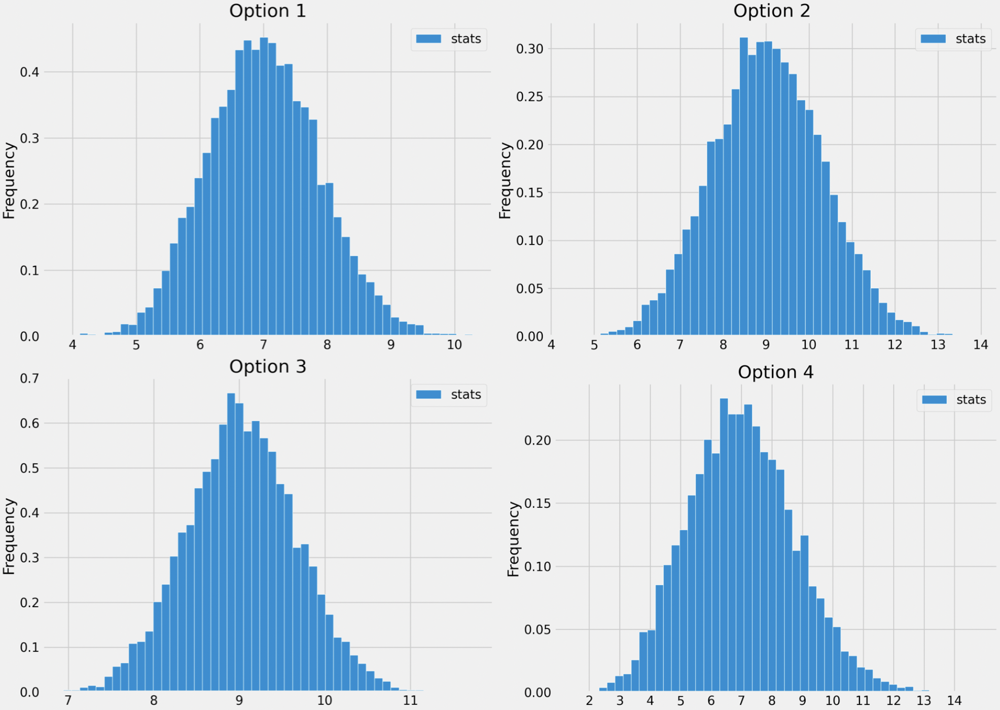
Option 1
Option 2
Option 3
Option 4
Answer: Option 3
The key to this problem is knowing to use the Central Limit Theorem.
Specifically, we know that if we collect many samples from a population
with replacement, then the distribution of the sample means will be
roughly normal with:
a mean that is equal to the mean of the population
a standard deviation that is \frac{\text{SD of population}}{\sqrt{\text{sample
size}}}
Here, the “population” is small_season,
because that is the sample we’re repeatedly (re)sampling from. While
season is actually the population, it is not seen at all in
the bootstrapping process, so it doesn’t directly influence the
distribution of the bootstrapped sample means.
The mean of small_season is 9, and so is the
distribution of bootstrapped sample means. The standard deviation of
small_season is 4, so the square root law, the standard
deviation of the distribution of bootstrapped sample means is \frac{4}{\sqrt{36}} = \frac{4}{6} =
\frac{2}{3}.
The answer now boils down to choosing the histogram that looks
roughly normally distributed with a mean of 9 and a standard deviation
of \frac{2}{3}. Options 1 and 4 can be
ruled out right away since their means seem to be smaller than 9. To
decide between Options 2 and 3, we can use the inflection point rule,
which states that in a normal distribution, the inflection points occur
at one standard deviation above and one standard deviation below the
mean. (An inflection point is when a curve changes from opening upwards
to opening downwards.) See the picture below for more details.
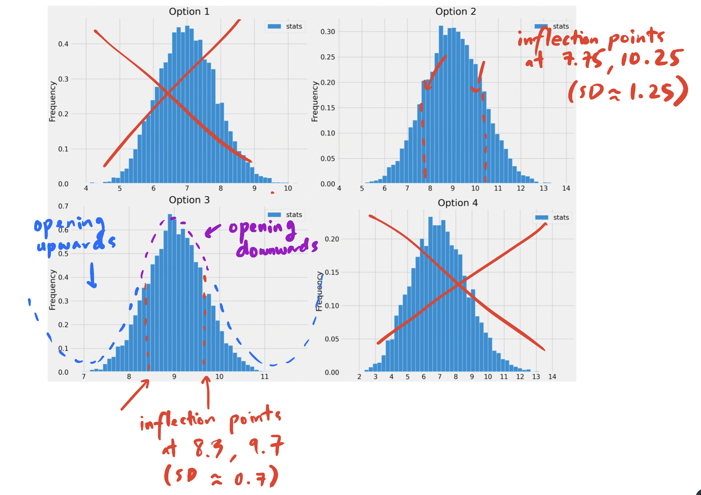
Option 3 is the only distribution that appears to be centered at 9
with a standard deviation of \frac{2}{3} (0.7 is close to \frac{2}{3}), so it must be the empirical
distribution of the bootstrapped sample means.
Difficulty: ⭐️⭐️⭐️⭐️
The average score on this problem was 42%.
Problem 1.5
We construct a 95% confidence interval for the true mean points per
game for all players by taking the middle 95% of the bootstrapped sample
means.
(left_b + right_b) / 2 is exactly equal to the mean
points per game in season.
(left_b + right_b) / 2 is not necessarily equal to the
mean points per game in season, but is close.
(left_b + right_b) / 2 is exactly equal to the mean
points per game in small_season.
(left_b + right_b) / 2 is not necessarily equal to the
mean points per game in small_season, but is close.
(left_b _+ right_b) / 2 is not close to either the mean
points per game in season or the mean points per game in
small_season.
Answer:(left_b + right_b) / 2 is not
necessarily equal to the mean points per game in
small_season, but is close.
Normal-based confidence intervals are of the form [\text{mean} - \text{something}, \text{mean} +
\text{something}]. In such confidence intervals, it is the case
that the average of the left and right endpoints is exactly the mean of
the distribution used to compute the interval.
However, the confidence interval we’ve created is not
normal-based, rather it is bootstrap-based! As such, we can’t
say that anything is exactly true; this rules out Options 1 and
3.
Our 95% confidence interval was created by taking the middle 95% of
bootstrapped sample means. The distribution of bootstrapped sample means
is roughly normal, and the normal distribution is
symmetric (the mean and median are both equal, and represent the
“center” of the distribution). This means that the middle of our 95%
confidence interval should be roughly equal to the mean of the
distribution of bootstrapped sample means. This implies that Option 4 is
correct; the difference between Options 2 and 4 is that Option 4 uses
small_season, which is the sample we bootstrapped from,
while Option 2 uses season, which was not accessed at all
in our bootstrapping procedure.
Difficulty: ⭐️⭐️⭐️
The average score on this problem was 62%.
Problem 1.6
Instead of bootstrapping, we could also construct a 95% confidence
interval for the true mean points per game by using the Central Limit
Theorem.
Recall that, when looking at just the players in
small_season, the mean number of points per game is 9, with
a standard deviation of 4. Also remember that small_season
is a random sample of size 36 taken from season.
Using only the information that we have about
small_season (i.e. without using any facts about
season), compute a 95% confidence interval for the true
mean points per game.
What are the left and right endpoints of your interval? Give your
answers as numbers rounded to 3 decimal places.
Answer:[7.667,
10.333]
In a normal distribution, roughly 95% of values are within 2 standard
deviations of the mean. The CLT tells us that the distribution of sample
means is roughly normal, and in subpart 4 of this problem we already
computed the SD of the distribution of sample means to be \frac{2}{3}.
So, our normal-based 95% confidence interval is computed as
follows:
\begin{aligned} &[\text{mean of
sample} - 2 \cdot \text{SD of distribution of sample means}, \text{mean
of sample} + 2 \cdot \text{SD of distribution of sample means}] \\
&= [9 - 2 \cdot \frac{4}{\sqrt{36}}, 9 + 2 \cdot
\frac{4}{\sqrt{36}}] \\ &= [9 - \frac{4}{3}, 9 + \frac{4}{3}] \\
&\approx \boxed{[7.667, 10.333]} \end{aligned}
Difficulty: ⭐️⭐️
The average score on this problem was 87%.
Problem 1.7
Recall that the mean points per game in season is 7,
which is not in the interval you found above (if it is, check your
work!).
Select the true statement below.
The 95% confidence interval we created in the previous subpart did
not contain the true mean points per game, which means that the
distribution of the sample mean is not normal.
The 95% confidence interval we created in the previous subpart did
not contain the true mean points per game, which means that the
distribution of points per game in small_season is not
normal.
The 95% confidence interval we created in the previous subpart did
not contain the true mean points per game. This is to be expected,
because the Central Limit Theorem is only correct 95% of the time.
The 95% confidence interval we created in the previous subpart did
not contain the true mean points per game, but if we collected many
original samples and constructed many 95% confidence intervals, then
roughly 95% of them would contain the true mean points per game.
The 95% confidence interval we created in the previous subpart did
not contain the true mean points per game, but if we collected many
original samples and constructed many 95% confidence intervals, then
exactly 95% of them would contain the true mean points per game.
Answer: The 95% confidence interval we created in
the previous subpart did not contain the true mean points per game, but
if we collected many original samples and constructed many 95%
confidence intervals, then roughly 95% of them would contain the true
mean points per game.
In a confidence interval, the confidence level gives us a level of
confidence in the process used to create the confidence
interval. If we repeat the process of collecting a sample from the
population and using the sample to construct a c% confidence interval
for the population mean, then roughly c% of the
intervals we create should contain the population mean. Option 4 is the
only option that corresponds to this interpretation; the others are all
incorrect in different ways.
In a board game, whenever it is your turn, you roll a six-sided die
and move that number of spaces. You get 10 turns, and you win the game
if you’ve moved 50 spaces in those 10 turns. Suppose you create a
simulation, based on 10,000 trials, to show the distribution of the
number of spaces moved in 10 turns. Let’s call this distribution
Dist10. You also wonder how the game would be
different if you were allowed 15 turns instead of 10, so you create
another simulation, based on 10,000 trials, to show the distribution of
the number of spaces moved in 15 turns, which we’ll call
Dist15
Problem 2.1
What can we say about the shapes of Dist10 and
Dist15?
both will be roughly normally distributed
only one will be roughly normally distributed
neither will be roughly normally distributed
Answer: both will be roughly normally
distributed
By the central limit theorem, both simulations will appear to be
roughly normally distributed.
Difficulty: ⭐️
The average score on this problem was 90%.
Problem 2.2
What can we say about the centers of Dist10 and
Dist15?
both will have approximately the same mean
the mean of Dist10 will be smaller than the mean
of Dist15
the mean of Dist15 will be smaller than the mean
of Dist10
Answer: the mean of Dist10 will
be smaller than the mean of Dist15
The distribution which moves in 10 turns will have a smaller mean as
there are less turns to move spaces. Therefore, the mean movement from
turns will naturally be higher for the distribution with more turns.
Difficulty: ⭐️⭐️
The average score on this problem was 83%.
Problem 2.3
What can we say about the spread of Dist10 and
Dist15?
both will have approximately the same standard deviation
the standard deviation of Dist10 will be smaller
than the standard deviation of Dist15
the standard deviation of Dist15 will be smaller
than the standard deviation of Dist10
Answer: the standard deviation of
Dist10 will be smaller than the standard deviation
of Dist15
Since taking more turns allows for more possible values, the spread
of Dist10 will be smaller than the standard
deviation of Dist15. (ie. consider the possible
range of values that are attainable for each case)
After this year’s Sun God Festival, the UCSD administration wants to
estimate how much students would be willing to pay for a ticket to
future Sun God Festivals. They (somehow) take 500 simple random samples of 100 students each, asking them this question.
They then plot a histogram showing the distribution of the mean response
from each sample.
Problem 3.1
Which of the following statements are true? Select all that
apply.
The histogram will be approximately centered around the mean amount
that all UCSD students would be willing to pay.
The variability in the histogram is due to the fact that we resample
with replacement.
This distribution is an example of an empirical distribution.
This distribution includes many randomly generated parameters.
None of the above.
Answer: Options 1 and 3
Difficulty: ⭐️⭐️
The average score on this problem was 88%.
Problem 3.2
Describe in one word how the histogram would be
different if it were instead based on 500 simple random samples of 1000 students each.
The Oscars, or Academy Awards, are the highest awards in the film
industry, awarded each year to the best movies of that year. The
oscars DataFrame contains a row for each movie that has
ever been nominated for an Oscar. The "name" column
contains the name of the movie and the "rating" column
contains a rating of the movie on a 0 to 100 scale. This number
incorporates many factors, but we won’t worry about how it is
computed.
Problem 4.1
Fill in the blanks below to collect a simple random
sample of 400 movies from the oscars DataFrame,
then calculate 10,000 bootstrapped sample mean ratings.
my_sample = __(x)__
n_resamples = 10000
boot_means = np.array([])
for i in np.arange(n_resamples):
resample = __(y)__
mean = __(z)__
boot_means = np.append(boot_means, mean)
Answer (x):oscars.sample(400)
Difficulty: ⭐️⭐️
The average score on this problem was 85%.
Answer (y):my_sample.sample(400, replace=True)
Difficulty: ⭐️⭐️
The average score on this problem was 87%.
Answer (z):resample.get("rating").mean()
Difficulty: ⭐️
The average score on this problem was 96%.
Problem 4.2
In each blank, circle the word that correctly fills in the
sentence.
A histogram of boot_means shows a(n)
probability / empirical distribution
of a statistic / parameter.
Answer: empirical, statistic
Difficulty: ⭐️⭐️
The average score on this problem was 77%.
Problem 4.3
Suppose we use the array boot_means to calculate a 90%
confidence interval for the mean rating of Oscar-nominated movies.
Select all correct conclusions we can draw about this
interval.
There is a 90% chance that the true mean rating of all
Oscar-nominated movies falls within this interval.
The sample mean rating is within 90% of the true mean rating of all
Oscar-nominated movies.
If we looked at the ratings of many Oscar-nominated movies, about 90%
of them would fall within this range.
None of the above.
Answer: None of the above.
Difficulty: ⭐️⭐️⭐️
The average score on this problem was 74%.
Problem 4.4
Suppose both of the following expressions evaluate to
True.
my_sample.get("rating").mean() == 61.25
np.std(my_sample.get("rating")) == 15
What are the left and right endpoints of a 95% CLT-based confidence
interval for the mean rating of Oscar-nominated movies?
Answer: left endpoint: 59.75, right endpoint:
62.75
Researchers from the San Diego Zoo, located within Balboa Park,
collected physical measurements of several species of penguins in a
region of Antarctica.
One piece of information they tracked for each of 330 penguins was
its mass in grams. The average penguin mass is 4200 grams, and the
standard deviation is 840 grams.
Problem 5.1
Consider the histogram of mass below.
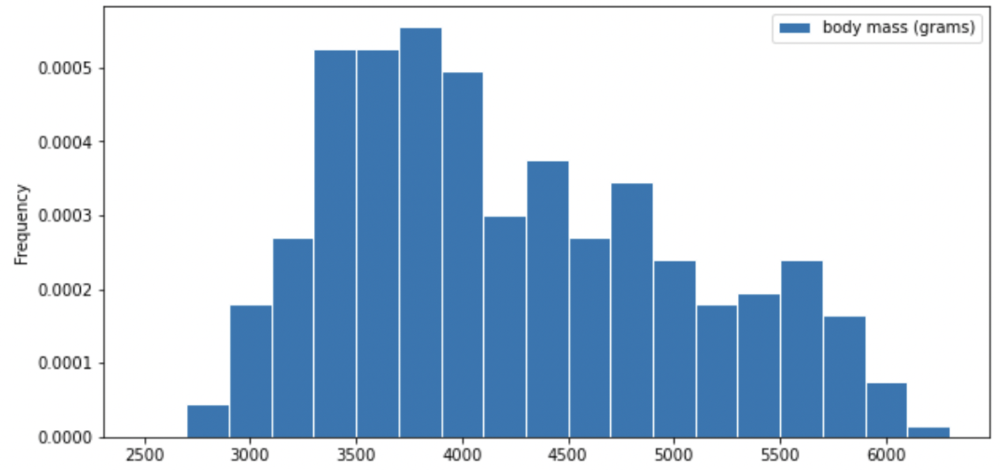
Select the true statement below.
The median mass of penguins is larger than the average mass of
penguins
The median mass of penguins is roughly equal to the average mass of
penguins (within 50 grams)
The median mass of penguins is less than the average mass of
penguins
It is impossible to determine the relationship between the median and
average mass of penguins just by looking at the above histogram
Answer: The median mass of penguins is less than the
average mass of penguins
This is a distribution that is skewed to the right, so mean is
greater than median.
Difficulty: ⭐️⭐️
The average score on this problem was 87%.
Problem 5.2
Which of the following is a valid conclusion that we can draw solely
from the histogram above?
The number of penguins with a mass of exactly 3500 grams is greater
than the number of penguins with a mass of exactly 5500 grams.
The number of penguins with a mass of at most 3500 grams is greater
than the number of penguins with a mass of at least 5500 grams.
There is an odd number of penguins in the dataset.
The number penguins with a mass of exactly 4000 grams is greater than
zero.
None of the above.
Answer: The number of penguins with a mass of at
most 3500 grams is greater than the number of penguins with a mass of at
least 5500 grams.
Recall, a histogram has intervals on the axis, so we cannot know the
frequency of an exact value. Thus, we cannot conclude statements 1, 3,
4. Since the frequency of an exact value is unknown, for statement 3, it
is possible that all numbers we have in this distribution are even.
Although in the graph, we are only given frequency rather than number,
we can justify statement 2 by comparing the area in the left side of
3500, and the area in the right side of 5500. You can either estimate by
visually comparing the areas of both parts or compute the area sum of
both sides by estimating the bars’ height and windth.
Difficulty: ⭐️⭐️
The average score on this problem was 89%.
Problem 5.3
For your convenience, we show the histogram of mass again below.
Recall, there are 330 penguins in our dataset. Their average mass is
4200 grams, and the standard deviation of mass is 840 grams.
Per Chebyshev’s inequality, at least what percentage of penguins have
a mass between 3276 grams and 5124 grams? Input your answer as a
percentage between 0 and 100, without the % symbol. Round to three
decimal places.
Answer: 17.355
Recall, Chebyshev’s inequality states that No matter what the shape
of the distribution is, the proportion of values in the range “average ±
z SDs” is at least1 -
\frac{1}{z^2}.
To approach the problem, we’ll start by converting 3276 grams and
5124 grams to standard units. Doing so yields \frac{3276 - 4200}{840} = -1.1, similarly,
\frac{5124 - 4200}{840} = 1.1. This
means that 3276 is 1.1 standard deviations below the
mean, and 5124 is 1.1 standard deviations above the
mean. Thus, we are calculating the proportion of values in the range
“average ± 1.1 SDs”.
When z = 1.1, we have 1 - \frac{1}{z^2} = 1 - \frac{1}{1.1^2} \approx
0.173553719, which as a percentage rounded to three decimal
places is 17.355\%.
Difficulty: ⭐️⭐️
The average score on this problem was 76%.
Problem 5.4
Per Chebyshev’s inequality, at least what percentage of penguins have
a mass between 1680 grams and 5880 grams?
50%
55.5%
65.25%
68%
75%
88.8%
95%
Answer: 75%
Recall: proportion with z SDs of the
mean
Percent in Range
All Distributions (via Chebyshev’s Inequality)
Normal Distributions
\text{average} \pm 1 \
\text{SD}
\geq 0\%
\approx 68\%
\text{average} \pm 2\text{SDs}
\geq 75\%
\approx 95\%
\text{average} \pm 3\text{SDs}
\geq 88\%
\approx 99.73\%
To approach the problem, we’ll start by converting 3276 grams and
5124 grams to standard units. Doing so yields \frac{1680 - 4200}{840} = -3, similarly,
\frac{5880 - 4200}{840} = 2. This means
that 1680 is 3 standard deviations below the mean, and
5880 is 2 standard deviations above the mean.
Proportion of values in [-3 SUs, 2 SUs] >= Proportion of values in
[-2 SUs, 2 SUs] >= 75% (Since we cannot assume that the distribution
is normal, we look at the All Distributions (via Chebyshev’s
Inequality) column for proportion).
Thus, at least 75% of the penguins have a mass
between 1680 grams and 5880 grams.
Difficulty: ⭐️⭐️⭐️
The average score on this problem was 72%.
Problem 5.5
The distribution of mass in grams is not roughly normal. Is the
distribution of mass in standard units roughly normal?
Yes
No
Impossible to tell
Answer: No
The shape of the distribution does not change since we are scaling
the x values for all data.
Difficulty: ⭐️⭐️⭐️
The average score on this problem was 60%.
Problem 5.6
Suppose all 330 penguin body masses (in grams) that the researchers
collected are stored in an array called masses. We’d like
to estimate the probability that two different randomly selected
penguins from our dataset have body masses within 50 grams of one
another (including a difference of exactly 50 grams). Fill in the
missing pieces of the simulation below so that the function
estimate_prob_within_50g returns an estimate for this
probability.
def estimate_prob_within_50g(): num_reps =10000 within_50g_count =0for i in np.arange(num_reps): two_penguins = np.random.choice(__(a)__)if __(b)__: within_50g_count = within_50g_count +1return within_50g_count / num_reps
Recall, np.random.choice( ) can have three parameters
array, n, replace=False, and returns n elements from the
array at random, without replacement. We are randomly choosing 2
different penguins from the massesarray, so we are using np.random.choice( )
without replacement.
We want to count the number of pairs of penguins that have body
masses difference within 50 grams, so we are using the index to access
the two penguins generated from two_penguins and
calculating their absolute difference with abs(). And in
this if condition, we only want to have penguins with
absolute difference less than or equal to 50, so we write a
<= condition to justify whether the generated pairs of
penguins fulfill this requirement.
Difficulty: ⭐️⭐️
The average score on this problem was 84%.
Problem 5.7
Recall, there are 330 penguins in our dataset. Their average mass is
4200 grams, and the standard deviation of mass is 840 grams. Assume that
the 330 penguins in our dataset are a random sample from the population
of all penguins in Antarctica. Our sample gives us one estimate of the
population mean.
To better estimate the population mean, we bootstrapped our sample
and plotted a histogram of the resample means, then took the middle 68
percent of those values to get a confidence interval. Which option below
shows the histogram of the resample means and the confidence interval we
found?
Option 1
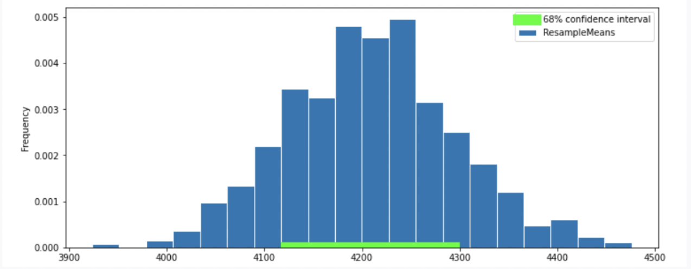
Option 2
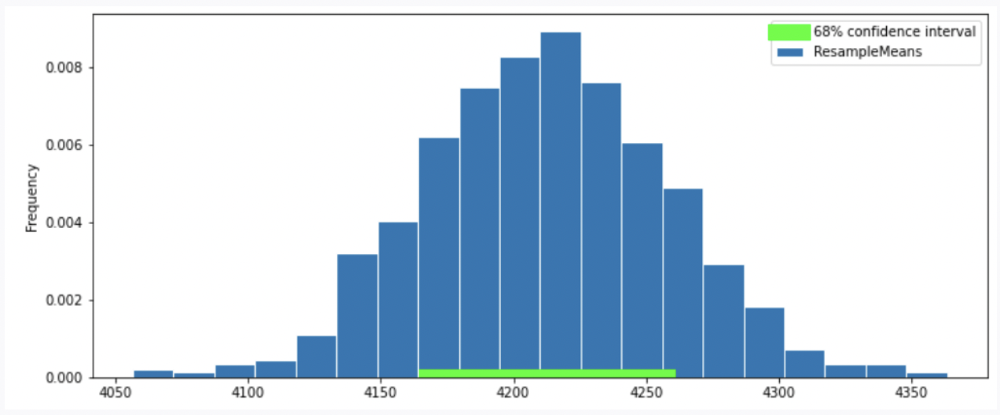
Option 3
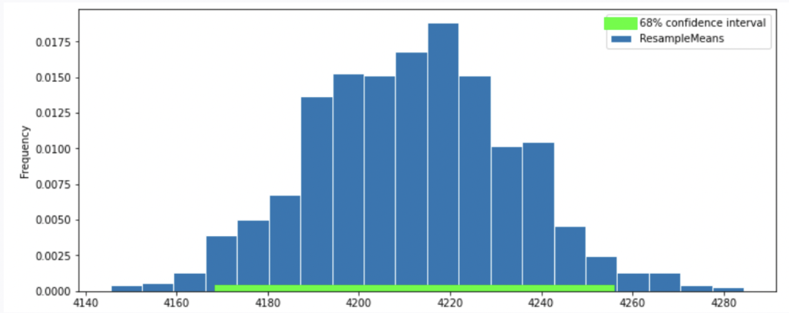
Option 4
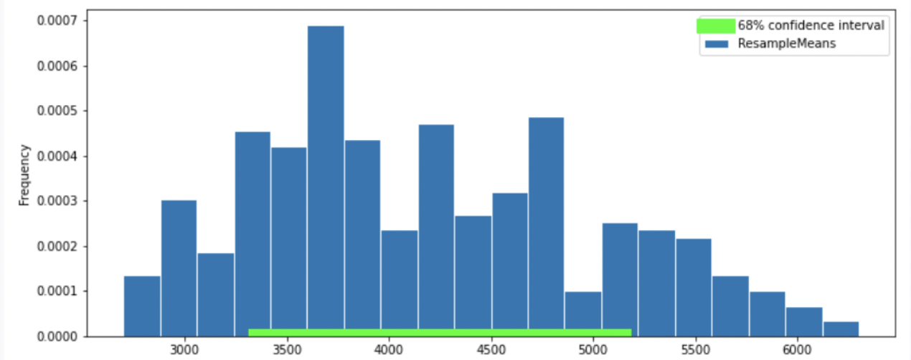
Answer: Option 2
Recall, according to the Central Limit Theorem (CLT), the probability
distribution of the sum or mean of a large random sample drawn with
replacement will be roughly normal, regardless of the distribution of
the population from which the sample is drawn.
Thus, our graph should have a normal distribution. We eliminate
Option 4.
Recall that the standard normal curve has inflection points at z = +-1, which is 68% proportion of a normal
distribution.(inflection point is where a curve goes from “opening down”
to “opening up”) Since we have a confidence intervel of 68% in this
question, by looking at the inflection point, we can eliminate
Option 3
To compute the SD of the sample mean’s distribution, when we don’t
know the population’s SD, we can use the sample’s SD (840): \text{SD of Distribution of Possible Sample Means}
\approx \frac{\text{Sample SD}}{\sqrt{\text{sample size}}} =
\frac{840}{\sqrt{330}} \approx 46.24
Recall: proportion with z SDs of the
mean
Percent in Range
All Distributions (via Chebyshev’s Inequality)
Normal Distributions
\text{average} \pm 1 \
\text{SD}
\geq 0\%
\approx 68\%
\text{average} \pm 2\text{SDs}
\geq 75\%
\approx 95\%
\text{average} \pm 3\text{SDs}
\geq 88\%
\approx 99.73\%
In this question, we want 68% confidence interval, given that the
distribution of sample mean is roughly normal, our CI should have range
\text{sample mean} \pm 1 \ \text{SD}.
Thus, the interval is approximately [4200-46.24 = 4153.76, 4200+46.24=4246.24].
We compare the 68% CI in Option 1, 2 and we choose Option
2 since it has a 68% CI with approximately the same
interval.
Difficulty: ⭐️⭐️⭐️
The average score on this problem was 66%.
Problem 5.8
Suppose boot_means is an array of the resampled means.
Fill in the blanks below so that [left, right] is a 68%
confidence interval for the true mean mass of penguins.
left = np.percentile(boot_means, __(a)__)right = np.percentile(boot_means, __(b)__)[left, right]
What goes in blank (a)? What goes in blank (b)?
Answer: (a) 16 (b) 84
Recall, np.percentile(array, p) computes the
pth percentile of the numbers in array. To
compute the 68% CI, we need to know the percentile of left tail and
right tail.
left percentile = (1-0.68)/2 = (0.32)/2 =
0.16 so we have 16th percentile
right percentile = 1-((1-0.68)/2) =
1-((0.32)/2) = 1-0.16 = 0.84 so we have 84th percentile
Difficulty: ⭐️
The average score on this problem was 94%.
Problem 5.9
Which of the following is a correct interpretation of this confidence
interval? Select all that apply.
There is an approximately 68% chance that mean weight of all penguins
in Antarctica falls within the bounds of this confidence interval.
Approximately 68% of penguin weights in our sample fall within the
bounds of this confidence interval.
Approximately 68% of penguin weights in the population fall within
the bounds of this interval.
If we created many confidence intervals using the same method,
approximately 68% of them would contain the mean weight of all penguins
in Antarctica.
None of the above
Answer: Option 4 (If we created many confidence
intervals using the same method, approximately 68% of them would contain
the mean weight of all penguins in Antarctica.)
Recall, what a k% confidence level
states is that approximately k% of the
time, the intervals you create through this process will contain the
true population parameter.
In this question, our population parameter is the mean weight of all
penguins in Antarctica. So 86% of the time, the intervals you create
through this process will contain the mean weight of all penguins in
Antarctica. This is the same as Option 4. However, it will be false if
we state it in the reverse order (Option 1) since our population
parameter is already fixed.
Among all Costco members in San Diego, the average monthly spending
in October 2023 was $350 with a standard deviation of
$40.
Problem 6.1
The amount Ciro spent at Costco in October 2023 was
-1.5 in standard units. What is this amount in dollars?
Give your answer as an integer.
Answer: 290
The formula for converting a value x_i to standard units is
x_{i \text{ (su)}} = \frac{x_i -
\text{mean of } x}{\text{SD of } x}.
We’re given that Ciro’s amount is -1.5 in standard units, and that the mean is
$350 and the SD is $40. Plugging these in and solving for x_i:
-1.5 = \frac{x_i - 350}{40}
-1.5 \cdot 40 = x_i - 350
x_i = 350 - 60 = 290.
Difficulty: ⭐️
The average score on this problem was 93%.
Problem 6.2
What is the minimum possible percentage of San Diego members that
spent between $250 and $450 in October
2023?
16%
22%
36%
60%
78%
84%
Answer: 84%
We don’t know the shape of the distribution, so we use
Chebyshev’s inequality: at least 1 - \frac{1}{z^2} of the data lies within
z standard deviations of the mean.
$250 to $450 is $100 on either side of the mean of $350. Since one SD
is $40, that is \frac{100}{40} = 2.5
SDs. Then
So at least 84% of members spent between $250 and $450.
Difficulty: ⭐️⭐️⭐️
The average score on this problem was 61%.
Problem 6.3
Now, suppose we’re given that the distribution of monthly spending in
October 2023 for all San Diego members is roughly normal. Given this
fact, fill in the blanks:
"In October 2023, 95% of San Diego members spent
between __(m)__ dollars and __(n)__ dollars."
What are m and n? Give your answers as integers rounded to the
nearest multiple of 10.
Answer: m: 270, n: 430
For a (roughly) normal distribution, about 95% of values lie within 2
standard deviations of the mean. So
In this question, suppose random_stages is a random
sample of undetermined size drawn with replacement from
stages. We want to estimate the proportion of stage wins
won by each country.
Problem 7.1
Suppose we extract the winning countries and store the resulting
Series. Consider the variable winners defined below, which
you may use throughout this question:
winners = random_stages.get("Winner Country")
Write a single line of code that evaluates to the proportion of
stages in random_stages won by France (country code
"FRA").
Answer:np.mean(winners == "FRA") or
np.count_nonzero(winners == "FRA") / len(winners)
winners == "FRA" creates a Boolean array where each
element is True if the corresponding value in the winners Series equals
"FRA", and False otherwise. In Python, True is equivalent
to 1 and False is equivalent to 0 when used in numerical operations.
np.mean(winners == "FRA") computes the average of this
Boolean array, which is equivalent to the proportion of True values
(i.e., the proportion of stages won by "FRA").
Alternatively, you can use
np.count_nonzero(winners == "FRA") / len(winners), which
counts the number of True values and divides by the total
number of entries to compute the proportion.
Difficulty: ⭐️⭐️
The average score on this problem was 81%.
Problem 7.2
We want to generate a 95% confidence interval for the true proportion
of wins by France in stages by using our random sample
random_stages. How many rows need to be in
random_stages for our confidence interval to have width of
at most 0.03? Recall that the maximum standard deviation for any series
of zeros and ones is 0.5. Do not simplify your answer.
Answer:4 *
\frac{0.5}{\sqrt{n}} \leq 0.03
For a 95% confidence interval for the population mean:
\left[
\text{sample mean} - 2\cdot \frac{\text{sample SD}}{\sqrt{\text{sample
size}}}, \
\text{sample mean} + 2\cdot \frac{\text{sample SD}}{\sqrt{\text{sample
size}}}
\right]
Note that the width of our CI is the right endpoint minus the left
endpoint:
Substitute the maximum standard deviation (sample SD
= 0.5) for any series of zeros and ones and set the width to be at most
0.03:
4 \cdot \frac{0.5}{\sqrt{n}} \leq 0.03.
Difficulty: ⭐️⭐️⭐️
The average score on this problem was 59%.
Problem 7.3
Suppose we now want to test the hypothesis that the true proportion
of stages won by Italy ("ITA") is 0.2 using a confidence interval and the
Central Limit Theorem. We want to conduct our hypothesis test at a
significance level of 0.01. Fill in the blanks to construct the
confidence interval [interval_left, interval_right]. Your
answer must use the Central Limit Theorem, not bootstrapping. Assume an
integer variable sample_size = len(winners) has been
defined, regardless of your answer to part 2.
The confidence interval for the true proportion is given by:
\left[
\text{sample mean} - z\cdot \frac{\text{sample SD}}{\sqrt{\text{sample
size}}}, \
\text{sample mean} + z\cdot \frac{\text{sample SD}}{\sqrt{\text{sample
size}}}
\right]
(i):np.mean(winners == "ITA") or
(winners == "ITA").mean()
The center of the confidence interval is the sample mean
proportion of stages won by Italy. This is calculated by taking
the mean of the Boolean array where winners equals
"ITA". The Boolean array has values 1 (if
true) or 0 (if false), so the mean directly represents the
proportion.
(ii):2.576
This is the critical value corresponding to a
99% confidence level. To have 99% of the data between -z and z,
the area under the curve outside of this range is: 1 - 0.99 = 0.01,
split equally between the two tails (0.005 in each tail). This means:
P(-z \leq Z \leq z) = 0.99.
The CDF at z = 2.576 captures
99.5% of the area to the left of 2.576: \text{stats.norm.cdf}(2.576) \approx
0.995.
Similarly, the CDF at z = -2.576
captures 0.5% of the area to the left: \text{stats.norm.cdf}(-2.576) \approx
0.005.
The total area between -2.576
and 2.576 is:
\text{stats.norm.cdf}(2.576) - \text{stats.norm.cdf}(-2.576) = 0.995 -
0.005 = 0.99.
This confirms that z = 2.576 is the
correct critical value for a 99% confidence level.
(iii):winners == "ITA"
The standard deviation is calculated using the
Boolean array where winners equals "ITA".
(iv):np.sqrt(sample_size)
The denominator is the square root of the sample size. This is
consistent with the Central Limit Theorem.
Difficulty: ⭐️⭐️⭐️
The average score on this problem was 60%.
Problem 7.4
What is our null hypothesis?
The true proportion of stages won by Italy is 0.2.
The true proportion of stages won by Italy is not 0.2.
The true proportion of stages won by Italy is greater than 0.2.
The true proportion of stages won by Italy is less than 0.2.
Answer: The true proportion of stages won by Italy
is 0.2.
The null hypothesis assumes that there is no difference or effect.
Here, it states that the true proportion of stages won by Italy equals
0.2.
Difficulty: ⭐️
The average score on this problem was 90%.
Problem 7.5
What is our alternative hypothesis?
The true proportion of stages won by Italy is 0.2.
The true proportion of stages won by Italy is not 0.2.
The true proportion of stages won by Italy is greater than 0.2.
The true proportion of stages won by Italy is less than 0.2.
Answer: The true proportion of stages won by Italy
is not 0.2.
The alternative hypothesis is the opposite of the null hypothesis.
Here, we test whether the true proportion of stages won by Italy is
different from 0.2.
Difficulty: ⭐️⭐️
The average score on this problem was 85%.
Problem 7.6
Suppose we calculated the interval [0.195,
0.253] using the above process. Should we reject or fail to
reject our null hypothesis?
Reject
Fail to reject
Answer: Fail to reject.
The confidence interval calculated is [0.195, 0.253],
and the null hypothesis value (0.2) lies within this interval. This
means that 0.2 is a plausible value for the true proportion at the 99%
confidence level. Therefore, we do not have sufficient evidence to
reject the null hypothesis.
Oren has a random sample of 200 dog prices in an array called
oren. He has also bootstrapped his sample 1,000 times and
stored the mean of each resample in an array called
boots.
In this question, assume that the following code has run:
a = np.mean(oren)b = np.std(oren)c =len(oren)
Problem 8.1
What expression best estimates the population’s standard
deviation?
b
b / c
b / np.sqrt(c)
b * np.sqrt(c)
Answer: b
The function np.std directly calculated the standard
deviation of array oren. Even though oren is
sample of the population, its standard deviation is still a pretty good
estimate for the standard deviation of the population because it is a
random sample. The other options don’t really make sense in this
context.
Difficulty: ⭐️⭐️⭐️
The average score on this problem was 57%.
Problem 8.2
Which expression best estimates the mean of boots?
0
a
(oren - a).mean()
(oren - a) / b
Answer: a
Note that a is equal to the mean of oren,
which is a pretty good estimator of the mean of the overall population
as well as the mean of the distribution of sample means. The other
options don’t really make sense in this context.
Difficulty: ⭐️⭐️
The average score on this problem was 89%.
Problem 8.3
What expression best estimates the standard deviation of
boots?
b
b / c
b / np.sqrt(c)
(a -b) / np.sqrt(c)
Answer: b / np.sqrt(c)
Note that we can use the Central Limit Theorem for this problem which
states that the standard deviation (SD) of the distribution of sample
means is equal to (population SD) / np.sqrt(sample size).
Since the SD of the sample is also the SD of the population in this
case, we can plug our variables in to see that
b / np.sqrt(c) is the answer.
Difficulty: ⭐️
The average score on this problem was 91%.
Problem 8.4
What is the dog price of $560 in standard units?
(560 - a) / b
(560 - a) / (b / np.sqrt(c))
(a - 560) / (b / np.sqrt(c))}
abs(560 - a) / b
abs(560 - a) / (b / np.sqrt(c))
Answer: (560 - a) / b
To convert a value to standard units, we take the value, subtract the
mean from it, and divide by SD. In this case that is
(560 - a) / b, because a is the mean of our
dog prices sample array and b is the SD of the dog prices
sample array.
Difficulty: ⭐️⭐️
The average score on this problem was 80%.
Problem 8.5
The distribution of boots is normal because of the
Central Limit Theorem.
True
False
Answer: True
True. The central limit theorem states that if you have a population
and you take a sufficiently large number of random samples from the
population, then the distribution of the sample means will be
approximately normally distributed.
Difficulty: ⭐️
The average score on this problem was 91%.
Problem 8.6
If Oren’s sample was 400 dogs instead of 200, the standard deviation
of boots will…
Increase by a factor of 2
Increase by a factor of \sqrt{2}
Decrease by a factor of 2
Decrease by a factor of \sqrt{2}
None of the above
Answer: Decrease by a factor of \sqrt{2}
Recall that the central limit theorem states that the STD of the
sample distribution is equal to
(population STD) / np.sqrt(sample size). So if we increase
the sample size by a factor of 2, the STD of the sample distribution
will decrease by a factor of \sqrt{2}.
Difficulty: ⭐️⭐️
The average score on this problem was 80%.
Problem 8.7
If Oren took 4000 bootstrap resamples instead of 1000, the standard
deviation of boots will…
Increase by a factor of 4
Increase by a factor of 2
Decrease by a factor of 2
Decrease by a factor of 4
None of the above
Answer: None of the above
Again, from our formula given by the central limit theorem, the
sample STD doesn’t depend on the number of bootstrap resamples so long
as it’s “sufficiently large”. Thus increasing our bootstrap sample from
1000 to 4000 will have no effect on the std of boots
Difficulty: ⭐️⭐️⭐️
The average score on this problem was 74%.
Problem 8.8
Write one line of code that evaluates to the right
endpoint of a 92% CLT-Based confidence interval for the mean
dog price. The following expressions may help:
Recall that a 92% confidence interval means an interval that consists
of the middle 92% of the distribution. In other words, we want to “chop”
off 4% from either end of the ditribution. Thus to get the right
endpoint, we want the value corresponding to the 96th percentile in the
mean dog price distribution, or
mean + 1.75 * (SD of population / np.sqrt(sample size) or
a + 1.75 * b / np.sqrt(c) (we divide by
np.sqrt(c) due to the central limit theorem). Note that the
second line of information that was given
stats.norm.cdf(1.4) is irrelavant to this particular
problem.
Recall that flurry is a simple random sample of 100 rows
from snow.
Problem 9.1
Fill in the blanks in the code below so that means
evaluates to an array of 5000 bootstrapped estimates for the mean
"snowfall" value in snow.
means = np.array([])for i in np.arange(5000): resample = flurry.sample(___(a)___) means = np.append(means, __(b)__)
Answer (a):100, replace=True or
flurry.shape[0], replace=True
Answer (b):resample.get("snowfall").mean()
Explanation (a): When bootstrapping, each resample must have the same
size as the original sample and be taken with replacement.
Explanation (b): Since we are estimating mean
"snowfall", we must compute the corresponding quantity
within each resample.
Difficulty: ⭐️⭐️
The average score on this problem was 85%.
Problem 9.2
Imagine we were to take 1000 new samples directly from
snow, each of size 100, and compute the mean
"snowfall" value for each sample. Which of the following
gives a reasonable approximation for the standard deviation of this set
of sample means? Select all that apply.
Answer:np.std(snow.get("snowfall")) / 10 and
np.std(means)
The means from (a) and the sample means of these 1000
new samples are approximating the true distribution of sample means for
"snowfall". From lecture, the sample mean and SD are likely
to be close to the population mean and SD. Thus, the SD of
means and the SD of the new collection of sample means will
be similar to each other (because they are both approximating the same
population parameter). The choice np.std(means) is
correct.
We look for other options that approximate the SD of sample means
distribution. From the original sample, note that this can be
approximated as follows:
Since our original sample is given by
snow.get("snowfall"), the sample SD is given by
np.std(snow.get("snowfall")). We now need to divide by the
square root of the sample size, which is given to be 100. Since \sqrt{100} = 10, it follows that
np.std(snow.get("snowfall")) / 10 is correct.
The other options are incorrect because they do not approximate the
SD of the distribution of sample means.
Difficulty: ⭐️⭐️⭐️
The average score on this problem was 61%.
Problem 9.3
The following code prints a C%
bootstrapped confidence interval for the mean "snowfall"
value in snow, using the 5000 bootstrapped estimates stored
in the array means and cutting off an equal amount from
each tail.
(i.) What goes in blank (a)? In other words, what is
the value of the variable X? Give your answer as an
integer.
(ii.) What is the value of C? In other words, what is the confidence
level of the interval produced? Give your answer as an
integer.
Answer (i.): 4
Note that the values X and 24 * X must be
between 0 and 100. Furthermore, a bootstrapped C% confidence interval places equal
probability mass in the left and right tails of the bootstrapped
distribution. Here, this property can be expressed as follows:
|X - 0| = |100 - 24X|
Solving for X yields:
X - 0 = 100 - 24X
25X = 100
X = 4
Indeed if X = 4, then 24X = 24(4) = 96, such that 100 - 96 = 4. This is a valid bootstrapped
confidence interval.
Answer (ii.): 92
We saw that X = 4 in part (a). Our
left endpoint corresponds to the 4th percentile. Our right endpoint
corresponds to the 96th percentile. This means that C = 96 - 4 = 92.
Ryan writes the following code to obtain a 95% bootstrapped
confidence interval for the mean number of students in Geisel’s second
floor at 10AM in the fall only:
stats = np.array([])
for i in range(3333):
stat = fall.sample(fall.shape[0],
replace=True).get("students").mean()
stats = np.append(stats, stat)
lower = np.percentile(stats, 2.5)
upper = np.percentile(stats, 97.5)
Problem 11.1
Write one line of code that evaluates to the
upper endpoint of the 95\% CLT-based confidence interval for this
same parameter. Recall that some potentially relevant values are
provided with the DataFrames on the previous page.
Answer:
400 + 2 * 10 / fall.shape[0] ** 0.5
Difficulty: ⭐️⭐️⭐️
The average score on this problem was 65%.
Problem 11.2
True or False: The 95\% confidence interval generated by the
bootstrapping code above cannot be narrower than a 95%
confidence interval generated by the Central Limit Theorem.
True
False
Answer: False
Difficulty: ⭐️⭐️⭐️
The average score on this problem was 69%.
Problem 11.3
True or False: The Central Limit Theorem tells us
that the data in fall.get("students") is roughly normally
distributed.
True
False
Answer: False
Difficulty: ⭐️⭐️⭐️
The average score on this problem was 62%.
Problem 11.4
True or False: To obtain a 95% bootstrapped
confidence interval for the median, we can simply change
.mean() to .median() in the original code
above.
True
False
Answer: True
Difficulty: ⭐️⭐️
The average score on this problem was 80%.
Problem 11.5
True or False: We can use the CLT to create a valid
95\% confidence interval for the
median.
The DataFrame geisel contains a row for each day of this
academic year. The "Students" column contains the number of
students who visited Geisel Library on that day, as an
int.
Problem 12.1
Fill in the blanks below such that
geisel_sample is a simple random
sample of 50 rows of geisel, and
the code prints the endpoints of a 95% bootstrapped confidence
interval for the mean number of students at Geisel
Library, based on the data in geisel_sample.
geisel_sample = __(a)___ y = np.array([]): for i in np.arange(10000): x = __(b)__ y = np.append(y, x)print(np.percentile(y, 2.5), np.percentile(y, 97.5))
Answer (a):geisel.sample(50) or
geisel.sample(50, replace = False)
Answer (b):geisel_sample.sample(50, replace = True).get("Students").mean()
or equivalent
Difficulty: ⭐️⭐️
The average score on this problem was 75%.
Problem 12.2
Which of the following is the best description of x and
y in the code above?
x represents the original sample, and y
represents many resamples.
x represents the average student count for a single day,
and y represents the student count on all days.
x represents the sample statistic from a single
resample, and y represents the distribution of those
statistics across multiple resamples.
x represents the sample statistic for the original
sample, and y represents a distribution of statistics
across multiple resamples.
x represents the population parameter, and
y represents a bootstrapped distribution of sample
statistics.
Answer: Option 3: x represents the
sample statistic from a single resample, and y represents
the distribution of those statistics across multiple resamples.
Difficulty: ⭐️⭐️⭐️
The average score on this problem was 72%.
Problem 12.3
Select all true statements below.
If geisel_sample had instead had 60 rows, the resulting 95\% confidence interval would have been
wider.
If we made 10095\% confidence intervals based on
geisel_sample, about 95 of
them would contain the population mean.
On about 95\% of days, the number of
students at Geisel Library falls between the endpoints of our confidence
interval.
It would have also been appropriate to generate a confidence interval
for this parameter using the Central Limit Theorem.
The standard deviation of geisel_sample should be
approximately the same as the standard deviation of
geisel
The data in geisel_sample is roughly normally
distributed.
Answer:
Option 4: It would have also been appropriate to generate a
confidence interval for this parameter using the Central Limit
Theorem.
Option 5: The standard deviation of geisel_sample should
be approximately the same as the standard deviation of
geisel
In our sample, we have data on 163 medals for the
sport of table tennis. Based on our data, China seems to really dominate
this sport, earning 81 of these medals.
That’s nearly half of the medals for just one country! We want to do
a hypothesis test with the following hypotheses to see if this pattern
is true in general, or just happens to be true in our sample.
Null: China wins half of Olympic table tennis
medals.
Alternative: China does not win half of Olympic
table tennis medals.
Problem 13.1
Why can these hypotheses be tested by constructing a confidence
interval?
Since proportions are means, so we can use the CLT.
Since the test aims to determine whether a parameter is equal to a
fixed value.
Since we need to get a sense of how other samples would come out by
bootstrapping.
Since the test aims to determine if our sample came from a known
population distribution.
Answer: Since the test aims to determine whether a
parameter is equal to a fixed value
The goal of a confidence interval is to provide a range of values
that, given the data, are considered plausible for the parameter in
question. If the null hypothesis’ fixed value does not fall within this
interval, it suggests that the observed data is not very compatible with
the null hypothesis. Thus in our case, if a 95% confidence interval for
the proportion of medals won by China does not include ~0.5, then
there’s statistical evidence at the 5% significance level to suggest
that China does not win exactly half of the medals. So again in our
case, confidence intervals work to test this hypothesis because we are
attempting to find out whether or half of the medals (0.5) lies within
our interval at the 95% confidence level.
Difficulty: ⭐️⭐️⭐️⭐️
The average score on this problem was 44%.
Problem 13.2
Suppose we construct a 95% bootstrapped CI for the proportion of
Olympic table tennis medals won by China. Select all true
statements.
The true proportion of Olympic table tennis medals won by China has a
95% chance of falling within the bounds of our interval.
If we resampled our original sample and calculated the proportion of
Olympic table tennis medals won by China in our resample, there is
approximately a 95% chance our interval would contain this number.
95% of Olympic table tennis medals are won by China.
None of the above.
Answer: If we resampled our original sample and
calculated the proportion of Olympic table tennis medals won by China in
our resample, there is approximately a 95% chance our interval would
contain this number.
The second option is the only correct answer because it accurately
describes the process and interpretation of a bootstrap confidence
interval. A 95% bootstrapped confidence interval means that if we
repeatedly sampled from our original sample and constructed the interval
each time, approximately 95% of those intervals would contain the true
parameter. This statement does not imply that the true proportion has a
95% chance of falling within any single interval we construct; instead,
it reflects the long-run proportion of such intervals that would contain
the true proportion if we could repeat the process indefinitely. Thus,
the confidence interval gives us a method to estimate the parameter with
a specified level of confidence based on the resampling procedure.
Difficulty: ⭐️⭐️⭐️
The average score on this problem was 73%.
Problem 13.3
True or False: In this scenario, it would also be appropriate to
create a 95% CLT-based confidence interval.
True
False
Answer: True
The statement is true because the Central Limit Theorem (CLT) applies
to the sampling distribution of the proportion, given that the sample
size is large enough, which in our case, with 163 medals, it is. The CLT
asserts that the distribution of the sample mean (or proportion, in our
case) will approximate a normal distribution as the sample size grows,
allowing the use of standard methods to create confidence intervals.
Therefore, a CLT-based confidence interval is appropriate for estimating
the true proportion of Olympic table tennis medals won by China.
Difficulty: ⭐️⭐️⭐️
The average score on this problem was 71%.
Problem 13.4
True or False: If our 95% bootstrapped CI came out to be [0.479, 0.518], we would reject the null
hypothesis at the 0.05 significance level.
True
False
Answer: False
This is false, we would fail to reject the null hypothesis because
the interval [0.479, 0.518] includes
the value of 0.5, which corresponds to the null hypothesis that China
wins half of the Olympic table tennis medals. If the confidence interval
contains the hypothesized value, there is not enough statistical
evidence to reject the null hypothesis at the specified significance
level. In this case, the data does not provide sufficient evidence to
conclude that the proportion of medals won by China is different from
0.5 at the 0.05 significance level.
Difficulty: ⭐️
The average score on this problem was 92%.
Problem 13.5
True or False: If we instead chose to test these hypotheses at the
0.01 significance level, the confidence interval we’d create would be
wider.
True
False
Answer: True
Lowering the significance level means that you require more evidence
to reject the null hypothesis, thus seeking a higher confidence in your
interval estimate. A higher confidence level corresponds to a wider
interval because it must encompass a larger range of values to ensure
that it contains the true population parameter with the increased
probability. Thus as we lower the significance level, the interval we
create will be wider, making this statement true.
Difficulty: ⭐️⭐️
The average score on this problem was 79%.
Problem 13.6
True or False: If we instead chose to test these hypotheses at the
0.01 significance level, we would be more likely to conclude a
statistically significant result.
True
False
Answer: False
This statement is false. A small significance level lowers the chance
of getting a statistically significant result; our value for 0.01
significance has to be outside a 99% confidence interval to be
statistically significant. In addition, the true parameter was already
contained within the tighter 95% confidence interval, so we failed to
reject the null hypothesis at the 0.05 significance level. This
guarantees failing to reject the null hypotehsis at the 0.01
significance level since we know that whatever is contained in a 95%
confidence interval has to also be contained in a 99% confidence
interval. Thus, this answer is false.
Matilda has been working at Bill’s Book Bonanza since it first opened
and her shifts for each week are always randomly scheduled (i.e., she
does not work the same shifts each week). Due to the system restrictions
at the bookstore, when Matilda logs in with her employee ID, she only
has access to the history of sales made during her shifts. Suppose these
transactions are stored in a DataFrame called matilda,
which has the same columns as the sales DataFrame that
stores all transactions.
Matilda wants to use her random sample to estimate the mean
price of books purchased with cash at Bill’s Book Bonanza. For
the purposes of this question, assume Matilda only has access to
matilda, and not all of sales.
Problem 14.1
Complete the code below so that cash_left and
cash_right store the endpoints of an 86\% bootstrapped confidence interval for the
mean price of books purchased with cash at Bill’s Book Bonanza.
cash_means = np.array([])
original = __(a)__
for i in np.arange(10000):
resample = original.sample(__(b)__)
cash_means = np.append(cash_means, __(c)__)
cash_left = __(d)__
cash_right = __(e)__
matilda[matilda.get("cash")]
We first filter the matilda DataFrame to only include
rows where the payment method was cash, since these are the only rows
that are relevant to our question of the mean price of books purchased
with cash.
Difficulty: ⭐️⭐️⭐️
The average score on this problem was 65%.
original.shape[0], replace = True
We repeatedly resample from this filtered data. We always bootstrap
using the same sample size as the original sample, and with
replacement.
Difficulty: ⭐️⭐️
The average score on this problem was 79%.
resample.get("price").mean()
Our statistic is the mean price, which we need to calculate from the
resample DataFrame.
Difficulty: ⭐️⭐️⭐️
The average score on this problem was 71%.
np.percentile(cash_means, 7)
Since our goal is to construct an 86% confidence interval, we take the 7^{th} percentile as the left endpoint and
the 93^{rd} percentile as the right
endpoint. These numbers come from 100 - 86 =
14, which means we want 14\% of
the area excluded from our interval, and we want to split that up evenly
with 7\% on each side.
Difficulty: ⭐️⭐️
The average score on this problem was 84%.
np.percentile(cash_means, 93)
Difficulty: ⭐️⭐️
The average score on this problem was 84%.
Problem 14.2
Next, Matilda uses the data in matilda to construct a
95\% CLT-based confidence interval for
the same parameter.
Given that there are 400 cash transactions in matilda
and her confidence interval comes out as [19.58, 21.58], what is the standard
deviation of the prices of all cash transactions at Bill’s Book
Bonanza?
Answer: 10
The width of the interval is 21.58 - 19.58
= 2. Using the formula for the width of a 95\% CLT-based confidence interval and
solving for the standard deviation gives the answer.
Width = 4 *
\frac{SD}{\sqrt{400}}
SD = 2 * \frac{\sqrt{400}}{4} =
10
Difficulty: ⭐️⭐️⭐️
The average score on this problem was 61%.
Problem 14.3
Knowing the endpoints of Matilda’s 95% CLT-based confidence interval
can actually help us to determine the endpoints of her 86% bootstrapped
confidence interval. You may also need to know the following facts:
stats.norm.cdf(1.1) evaluates to
0.86
stats.norm.cdf(1.5) evaluates to
0.93
Estimate the value of cash_left to one decimal
place.
Answer: 19.8
The useful fact here is the second fact. It says that if you step 1.5
standard deviations to the right of the mean in a normal distribution,
93% of the area will be to the left. Since that leaves 7% of the area to
the right, this also means that the area to the left of -1.5 standard
units is 7%, by symmetry. So the area between -1.5 and 1.5 standard
units is 86% of the area, or the bounds for an 86% confidence interval.
This is the grey area in the picture below.
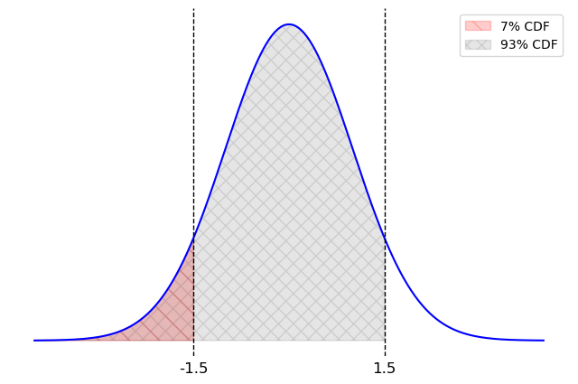
The middle of our interval is 20.58 so we calculate the left endpoint
as:
Which of the following are valid conclusions? Select all that
apply.
Approximately 95% of the values in cash_means fall
within the interval [19.58, 21.58].
Approximately 95% of books purchased with cash at Bill’s Book Bonanza
have a price that falls within the interval [19.58, 21.58].
The actual mean price of books purchased with cash at Bill’s Book
Bonanza has a 95% chance of falling within the interval [19.58, 21.58].
None of the above.
Answer: Approximately 95% of the values in
cash_means fall within the interval [19.58, 21.58].
Choice 1 is correct because of the way bootstrapped confidence
intervals are created. If we made a 95% bootstrapped confidence interval
from cash_means, it would capture 95% of the values in cash_means,
by design. This is not how the interval [19.58, 21.58] was created, however; this
interval comes from the CLT. However bootstrapped and CLT-based
confidence intervals give very nearly the same results. They are two
methods to solve the same problem and they create nearly identical
confidence intervals. So it is correct to say that approximately 95% of
the values in cash_means fall within a 95% CLT-based
confidence interval, which is [19.58,
21.58].
Choice 2 is incorrect because the interval estimates the mean price,
not individual book prices.
Choice 3 is incorrect because confidence intervals are about the
reliability of the method: if we repeated the whole bootstrapping
process many times, about 95% of the
intervals would contain the true mean. It does not indicate the
probability of the true mean being within this specific interval because
this interval is fixed and the true mean is also fixed. It doesn’t make
sense to talk about the probability of a fixed number falling in a fixed
interval; that’s like asking if there’s a 95% chance that 5 is between 2
and 10.
Difficulty: ⭐️⭐️⭐️
The average score on this problem was 63%.
Problem 14.5
Matilda has been wondering whether the mean price of books purchased
with cash at Bill’s Book Bonanza is \$20. What can she conclude about this?
The mean price of books purchased with cash at Bill’s Book Bonanza is
$20.
The mean price of books purchased with cash at Bill’s Book Bonanza
could plausibly be $20.
The mean price of books purchased with cash at Bill’s Book Bonanza is
not $20.
The mean price of books purchased with cash at Bill’s Book Bonanza is
most likely not $20.
Answer: The mean price of books purchased with cash
at Bill’s Book Bonanza could plausibly be $20.
This question is referring to a hypothesis test where we test whether
parameter (in this case, the mean price of books purchased with cash) is
equal to a specific value ($20). The hypothesis test can be conducted by
constructing a confidence interval for the parameter and checking
whether the specific value falls in the interval. Since $20 is within
the confidence interval, it is a plausible value for the parameter, but
never guaranteed.
Below is a density histogram representing the distribution of
randomly sampled stage distances.
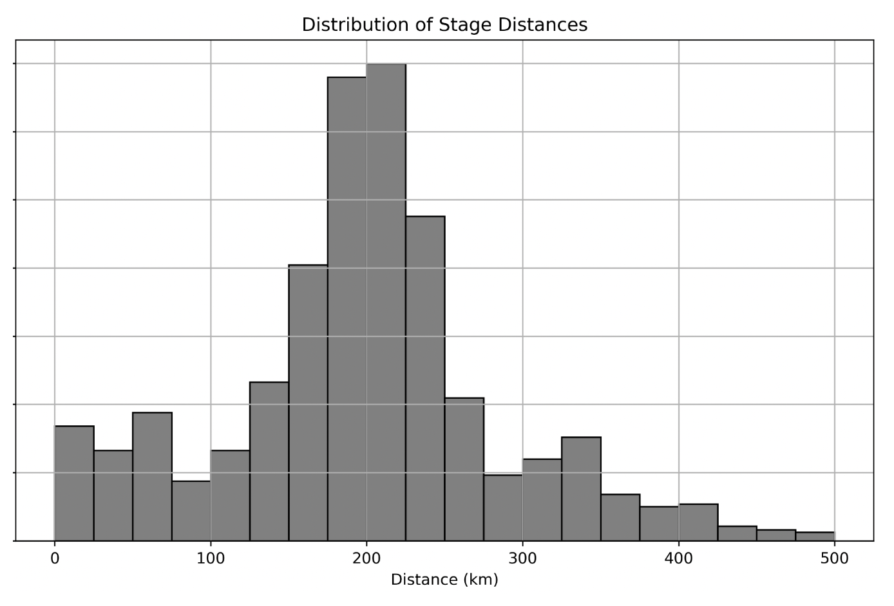
Problem 15.1
Which statement below correctly describes the relationship between
the mean and the median of the sampled stage distances?
The mean is significantly larger than the median.
The mean is significantly smaller than the median.
The mean is approximately equal to the median.
It is impossible to know the relationship between the mean and the
median.
Answer: The mean is approximately equal to the
median.
The histogram appears to be approximately
symmetric, with the peak near the center of the
distribution.
For symmetric distributions, the mean and the median are
approximately equal because the data is evenly distributed
around the central point.
If the distribution were skewed:
A right-skewed distribution would have the mean
significantly larger than the median.
A left-skewed distribution would have the mean
significantly smaller than the median.
In this case, there is no visible skew, so the correct answer is
that the mean is approximately equal to the median.
Difficulty: ⭐️⭐️⭐️
The average score on this problem was 55%.
Problem 15.2
Assume there are 100 stages in the random sample that generated this
plot. If there are 5 stages in the bin [275, 300),
approximately how many stages are in the bin
[200, 225)?
Answer:35 =
5\cdot7
The height of the bin [200, 225) on the density
histogram is approximately 7 times the height of the
bin [275, 300).
Since the number of stages in a bin is proportional to the bin’s
height, the number of stages in [200, 225) is 35 = 5\cdot7.
Difficulty: ⭐️⭐️
The average score on this problem was 78%.
Problem 15.3
Assume the mean distance is 200 km and the standard deviation is 50
km. At least what proportion of stage distances are guaranteed to lie
between 0 km and 400 km? Do not simplify your answer.
Answer:\frac{15}{16}
Using Chebyshev’s inequality, we know at least 1 - \frac{1}{z^2} of the data lies within
z SDs. Here, z = 4 so we know 1
- \frac{1}{16} = \frac{15}{16} of the data lie in that range.
Difficulty: ⭐️⭐️⭐️
The average score on this problem was 73%.
Problem 15.4
Again, assume the mean stage distance is 200 km and the standard
deviation is 50 km. Now, suppose we take a random sample of size 25 from
the stage distances, calculate the mean stage distance of this sample,
and repeat this process 500 times. What proportion of the means that we
calculate will fall between 190 km and 210 km? Do not simplify your
answer.
Answer: 68%
We know about 68% of values lie within 1 standard deviation of the
mean of any normal distribution. The distribution of means of samples of
size 25 from this dataset is normally distributed with mean 200km and SD
\frac{50}{\sqrt{25}} = 10, so 190km to
210km contains 68% of the values.
Difficulty: ⭐️⭐️⭐️
The average score on this problem was 55%.
Problem 15.5
Assume the mean distance is 200 km and the standard deviation is 50
km. Suppose we use the Central Limit Theorem to generate a 95%
confidence interval for the true mean distance of all Tour de France
stages, and get the interval [190\text{ km},
210\text{ km}]. Which of the following interpretations of this
confidence interval are correct?
95% of Tour de France stage distances fall between 190 km and 210
km.
There is a 95% chance that the true mean distance of all Tour de
France stages is between 190 km and 210 km.
We are 95% confident that the true mean distance of all Tour de
France stages is between 190 km and 210 km.
Our sample is of size 100.
Our sample is of size 25.
If we collected many original samples and constructed many 95%
confidence intervals, then exactly 95% of those intervals would contain
the true mean distance.
If we collected many original samples and constructed many 95%
confidence intervals, then roughly 95% of those intervals would contain
the true mean distance.
Answer: Option 3, Option 4, and Option 7
Option 1: Incorrect. Confidence intervals describe the
uncertainty in estimating the population mean, not the proportion of
data points. A 95% confidence interval does not imply that 95% of
individual stage distances fall between 190 km and 210 km.
Option 2: Incorrect. Confidence intervals are based on the
sampling process, not probability. Once the interval is calculated, the
true mean is either inside or outside the interval. We cannot assign a
probability to this.
Option 3: Correct. This is the standard interpretation of
confidence intervals: “We are 95% confident that the true mean lies
within the interval.”
Option 4: Correct. Given a sample size of 100 and population
standard deviation of 50, the confidence interval ([190, 210]) is
consistent with the calculation using the rule of thumb that a 95%
confidence interval is approximately 2 standard deviations apart
from the mean.
For a 95% confidence interval, the range can be approximated as:
Option 6: Incorrect. The wording “exactly 95%” is overly precise.
In practice, confidence intervals are based on the sampling process, and
we use “approximately” or “roughly” 95%.
Option 7: Correct. By definition of a confidence interval, if we
repeatedly sampled and constructed 95% confidence intervals, roughly 95%
of them would contain the true mean.
Difficulty: ⭐️⭐️⭐️
The average score on this problem was 72%.
Problem 15.6
Suppose we take 500 random samples of size 100 from the stage
distances, calculate their means, and draw a histogram of the
distribution of these sample means. We label this Histogram A. Then, we
take 500 random samples of size 1000 from the stage distances, calculate
their means, and draw a histogram of the distribution of these sample
means. We label this Histogram B. Fill in the blanks so that the
sentence below correctly describes how Histogram B looks in comparison
to Histogram A.
“Relative to Histogram A, Histogram B would appear __(i)__ and
shifted __(ii)__ due to the __(iii)__ mean and the __(iv)__ standard
deviation.”
(i):
thinner
wider
the same width
unknown
(ii):
left
right
not at all
unknown
(iii):
larger
smaller
unchanged
unknown
(iv):
larger
smaller
unchanged
unknown
Answer:
(i): thinner
Histogram B would appear thinner because larger
sample sizes reduce the variability of the sample means. With a sample
size of 1000 (compared to 100 for Histogram A), the standard error
decreases, leading to a narrower distribution.
(ii): not at all
Histogram B would not shift left or right because
the sample mean does not depend on the sample size. Both histograms have
the same mean, as they are based on the same population.
(iii): unchanged
The mean remains unchanged because the mean of the
sampling distribution (the population mean) does not depend on sample
size.
(iv): smaller
The standard deviation of Histogram B is smaller
because \text{SD of Distribution of Possible
Sample Means} = \frac{\text{Population SD}}{\sqrt{\text{sample
size}}}
Increasing sample size from 100 to 1000 decreases the Sample standard
deviation as the Population standard deviation remains unchanged,
leading to a smaller standard deviation for the sampling
distribution.
True or False: Suppose that from a sample, you
compute a 95% normal confidence interval for a population parameter to
be the interval [L, R]. Then the average of L and R is the mean of the
original sample.
Answer: True
True, a 95% confidence interval indicates we are 95% confident that
the true population parameter falls within the interval [L, R]. Looking
at how a confidence interval is calculated is by adding/ subtracting a
confidence level value (z) by the standard error. Since the top and
bottom of the interval will be different from the mean by the same
amount, the average will be the mean. (For more information, refer to
the reference sheet)
We want to use the sample of data in olympians to
estimate the mean age of Olympic beach volleyball players.
Problem 17.1
Which of the following distributions must be normally distributed in
order to use the Central Limit Theorem to estimate this parameter?
The age distribution of all Olympic athletes.
The age distribution of Olympic beach volleyball players.
The age distribution of Olympic beach volleyball in our sample.
None of the above.
Answer: None of the Above
The central limit theorem states that the distribution of possible
sample means and sample sums is approximately normal,
no matter the distribution of the population. Options A, B, and C are
not probability distributions of the sum or mean of a large random
sample draw with replacement.
Difficulty: ⭐️⭐️⭐️
The average score on this problem was 72%.
Problem 17.2
(10 pts) Next we want to use bootstrapping to estimate this
parameter. Which of the following code implementations correctly
generates an array called sample_means containing 10,000 bootstrapped sample means?
Way 1:
sample_means = np.array([])for i in np.arange(10000): bv = olympians[olympians.get("Sport") =="Beach Volleyball"] one_mean = (bv.sample(bv.shape[0], replace=True) .get("Age").mean()) sample_means = np.append(sample_means, one_mean)
Way 2:
sample_means = np.array([])for i in np.arange(10000): bv = olympians[olympians.get("Sport") =="Beach Volleyball"] one_mean = (olympians.sample(olympians.shape[0], replace=True) .get("Age").mean()) sample_means = np.append(sample_means, one_mean)
sample_means = np.array([]) bv = olympians[olympians.get("Sport") =="Beach Volleyball"]for i in np.arange(10000): one_mean = (bv.sample(bv.shape[0], replace=True) .get("Age").mean()) sample_means = np.append(sample_means, one_mean)
Way 5:
sample_means = np.array([]) bv = olympians[olympians.get("Sport") =="Beach Volleyball"] one_mean = (bv.sample(bv.shape[0], replace=True) .get("Age").mean())for i in np.arange(10000): sample_means = np.append(sample_means, one_mean)
Way 1
Way 2
Way 3
Way 4
Way 5
Answer: Way 1 and Way 4
Way 1 first creates a DataFrame bv, which is a subset
DataFrame of olympians but filtered to only have
"Beach Volleyball". It then samples from bv
with replacement, and counts the mean of that sample and stores it in
the variable one_sample. It does this 10,000 times (due to
the for loop), each time creating a dataframe bv, sampling
from it, calculating a mean, and then appending one_sample
to the array sample_means. This is a correct way to
bootstrap.
Way 2 is incorrect because it calculates one_mean using a sample
from the entire olympians DataFrame, instead of the bv
DataFrame with only the "Beach Volleyball" players. This
will result in a sample of players of any sport, and the mean of those
ages will be calculated.
Way 3 is incorrect because it queries for rows where the data in the
"Sport" column equals "Beach Volleyball" after
sampling from the DataFrame instead of before. This would lead to a mean
that is not representative of a sample of volleyball players’ ages
because we are sampling from all the rows with all different sports,
most likely resulting in a smaller sample size of volleyball players.
There would also be an inconsistent number of
"Beach Volleyball" players in each sample.
Way 4 is essentially the same as Way 1, except it creates the
DataFrame bv before the for loop. The DataFrame
bv will always be the same, so it doesn’t really matter if
we make bv before or after the for loop.
Way 5 is incorrect because the one_mean is calculated
only once, but is appended to the sample_means array 10,000
times. As a result, the same mean is being appended, instead of a
different mean being calculated and appended each iteration.
Difficulty: ⭐️⭐️
The average score on this problem was 88%.
Problem 17.3
For most of the answer choices in part (b), we do not have enough
information to predict how the standard deviation of
sample_means would come out. There is one answer choice,
however, where we do have enough information to compute the standard
deviation of sample_means. Which answer choice is this, and
what is the standard deviation of sample_means for this
answer choice?
Way 1
Way 2
Way 3
Way 4
Way 5
Answer: Way 5
Way 5 results in a sample_means array with the same mean appended
10,000 times. As a result the standard deviation would be 0 because the
entire array would be the same value repeated.
Difficulty: ⭐️⭐️⭐️
The average score on this problem was 57%.
Problem 17.4
There are 68 rows of olympians
corresponding to beach volleyball players. Assume that in part (b), we
correctly generated an array called sample_means containing
10,000 bootstrapped sample mean ages based on this original sample of 68
ages. The standard deviation of the original sample of 68 ages is
approximately how many times larger than the standard deviation of
sample_means? Give your answer to the nearest integer.
Answer: 8
Recall SD of sample_means = \frac{\text{Population SD}}{\sqrt{\text{sample
size}}}. The sample size equals 68. Based on this equation, the
population SD is \sqrt{68} times larger
than the SD of distribution of possible sample means. \sqrt{68} rounded to the nearest integer is
8.
You are interested in estimating the average wait time between an
interview and an internship offer being made. You take a random sample
of n internship offers and find that in
this sample, the average wait time is d
days and the standard deviation is 4
days.
You construct a 95% CLT-based confidence interval
for the true average wait time, in days, which comes out to [10.4, 13.6]. Find n and d.
Answer: n = 25 d = 12
A CLT-based 95% interval is d ± 2·(4/√n), so d is the midpoint of
[10.4, 13.6], which is 12. The half-width is 1.6 = 2·(4/√n), so 4/√n =
0.8, giving √n = 5 and n = 25.
Suppose we sample 400 rows of olympians
at random without replacement, then generate a 95% CLT-based confidence
interval for the mean age of Olympic medalists based on this sample.
Problem 19.1
The CLT is stated for samples drawn with replacement, but in
practice, we can often use it for samples drawn without replacement.
What is it about this situation that makes it reasonable to still use
the CLT despite the sample being drawn without replacement?
The sample is much smaller than the population.
The statistic is the sample mean.
The CLT is less computational than bootstrapping, so we don’t need to
sample with replacement like we would for bootstrapping.
The population is normally distributed.
The sample standard deviation is similar to the population standard
deviation.
Answer: The sample is much smaller than the
population.
The Central Limit Theorem (CLT) states that regardless of the shape
of the population distribution, the sampling distribution of the sample
mean will be approximately normally distributed if the sample size is
sufficiently large. The key factor that makes it reasonable to still use
the CLT, is the sample size relative to the population size. When the
sample size is much smaller than the population size, as in this case
where 400 rows of Olympians are sampled from a likely much larger
population of Olympians, the effect of sampling without replacement
becomes negligible.
Difficulty: ⭐️⭐️⭐️⭐️
The average score on this problem was 47%.
Problem 19.2
Suppose our 95% CLT-based confidence interval for the mean age of
Olympic medalists is [24.9, 26.1]. What
was the mean of ages in our sample?
Answer: Mean = 25.5
We calculate the mean by first determining the width of our interval:
26.1 - 24.9 = 1.2, then we divide this width in half to get 0.6 which
represents the distance from the mean to each side of the confidence
interval. Using this we can find the mean in two ways: 24.9 + 0.6 = 25.5
OR 26.1 - 0.6 = 25.5.
Difficulty: ⭐️
The average score on this problem was 90%.
Problem 19.3
Suppose our 95% CLT-based confidence interval for the mean age of
Olympic medalists is [24.9, 26.1]. What
was the standard deviation of ages in our sample?
Answer: Standard deviation = 6
We can calculate the sample standard deviation (sample SD) by using
the 95% confidence interval equation:
Among Hogwarts students, Chocolate Frogs are a popular enchanted
treat. Chocolate Frogs are individually packaged, and every Chocolate
Frog comes with a collectible card of a famous wizard (ex.”Albus
Dumbledore"). There are 80 unique cards, and each package contains
one card selected uniformly at random from these
80.
Neville would love to get a complete collection with all 80 cards,
and he wants to know how many Chocolate Frogs he should expect to buy to
make this happen.
Suppose we have access to a function called
frog_experiment that takes no inputs and simulates the act
of buying Chocolate Frogs until a complete collection of cards is
obtained. The function returns the number of Chocolate Frogs that were
purchased. Fill in the blanks below to run 10,000 simulations and set
avg_frog_count to the average number of Chocolate Frogs
purchased across these experiments.
frog_counts = np.array([])
for i in np.arange(10000):
frog_counts = np.append(__(a)__)
avg_frog_count = __(b)__
Problem 20.1
What goes in blank (a)?
Answer:frog_counts, frog_experiment()
Each call to frog_experiment() simulates purchasing
Chocolate Frogs until a complete set of 80 unique cards is obtained,
returning the total number of frogs purchased in that simulation. The
result of each simulation is then appended to the
frog_counts array.
Difficulty: ⭐️⭐️⭐️
The average score on this problem was 65%.
Problem 20.2
What goes in blank (b)?
Answer:frog_counts.mean()
After running the loop for 10000 times, the frog_counts
array holds all the simulated totals. Taking the mean of that array
(frog_counts.mean()) gives the average number of frogs
needed to complete the set of 80 unique cards.
Difficulty: ⭐️⭐️
The average score on this problem was 89%.
Problem 20.3
Realistically, Neville can only afford to buy 300 Chocolate Frog
cards. Using the simulated data in frog_counts, write a
Python expression that evaluates to an approximation of the probability
that Neville will be able to complete his collection.
Answer:np.count_nonzero(frog_counts <= 300) / len(frog_counts)
or equivlent, such as
np.count_nonzero(frog_counts <= 300) / 10000 or
(frog_counts <= 300).mean()
In the simulated data, each entry of frog_counts is the
number of Chocolate Frogs purchased in one simulation before collecting
all 80 unique cards. We want to estimate the probability that Neville
completes his collection with at most 300 cards.
frog_counts <= 300 creates a boolean array of the
same length as frog_counts, where each element is True if
the number of frogs used in that simulation was 300 or fewer, and False
otherwise.
np.count_nonzero(frog_counts <= 300) counts how many
simulations (out of all the simulations) met the condition since
True evaluates to 1 and False evaluates to
0.
Dividing by the total number of simulations,
len(frog_counts), converts that count to probability.
Difficulty: ⭐️⭐️⭐️
The average score on this problem was 59%.
Problem 20.4
True or False: The Central Limit Theorem states that
the data in frog_counts is roughly normally
distributed.
True
False
Answer: False
The Central Limit Theorem (CLT) says that the probability
distribution of the sum or mean of a large random sample drawn with
replacement will be roughly normal, regardless of the distribution of
the population from which the sample is drawn.
The Central Limit Theorem (CLT) does not claim that individual
observations are normally distributed. In this problem, each entry of
frog_counts is a single observation: the number of frogs
purchased in one simulation to complete the collection. There is no
requirement that these individual data points themselves follow a normal
distribution.
However, if we repeatedly take many samples of such observations and
compute the sample mean, then that mean would tend toward a normal
distribution as the sample size grows, follows the CLT.
Minchan wants to see his listening trends. Suppose he takes many
samples of size 30 from plays_minchan and computes their
means. For each statement below, select the best answer.
Problem 21.1
(a) We expect that at least 75% of all of the
sampled values of plays_minchan lie within 2 standard
deviations of the population mean.
Yes, due to CLT
Yes, due to Chebyshev’s
No, due to CLT
No, due to Chebyshev’s
Yes, but for reasons that have nothing to do with Chebyshev’s or the
CLT
No, but for reasons that have nothing to do with Chebyshev’s or the
CLT
Answer: Yes, due to Chebyshev’s
This statement is about individual data values, not sample means.
Chebyshev’s inequality guarantees that at least 1 - 1/k^2 of data lies within k standard deviations of the mean. With k=2, that’s at least 1 - 1/4 = 75\%.
Difficulty: ⭐️⭐️
The average score on this problem was 78%.
Problem 21.2
(b) We expect that approximately 95% of all sample
means lie within 2 standard deviations of the population mean.
Yes, due to CLT
Yes, due to Chebyshev’s
No, due to CLT
No, due to Chebyshev’s
Yes, but for reasons that have nothing to do with Chebyshev’s or the
CLT
No, but for reasons that have nothing to do with Chebyshev’s or the
CLT
Answer: Yes, due to CLT
With a sample size of 30, the CLT tells us the distribution of sample
means is approximately normal. For a normal distribution, approximately
95% of values lie within 2 standard deviations of the mean.
Difficulty: ⭐️⭐️⭐️
The average score on this problem was 66%.
Problem 21.3
(c) Now assume the distribution of
plays_minchan is right-skewed but with no outliers. Which
of the following statements is most likely true for
plays_minchan?
The median is greater than the mean
The mean is greater than the median
The mean is the same as the median
Answer: The mean is greater than the median
In a right-skewed distribution, the long tail on the right pulls the
mean upward, so the mean is typically greater than the median.
Difficulty: ⭐️⭐️⭐️⭐️
The average score on this problem was 45%.
Problem 21.4
(d) If both Minchan’s and Ray’s plays distributions
are normal, will the distribution formed by pooling both of their plays
into one combined dataset be approximately normal?
Always
Sometimes
Never
Answer: Sometimes
A mixture of two normal distributions is not necessarily normal. If
the two distributions have very different means, the combined
distribution may be bimodal. However, if the means and standard
deviations are similar enough, the result could still appear
approximately normal.
(a) Ray calculated a 95% CLT-based confidence
interval for the population mean of his number of plays per song,
spanning [60.5, 100.5]. If the sample size used to construct the
interval was 25 songs, what is the standard deviation of Ray’s
plays?
Give your answer as a number or write “not enough information”.
Answer: 50
The width of the interval is 100.5 - 60.5 =
40. For a 95% confidence interval, the width of the interval is
4 \times \frac{SD}{\sqrt{n}}. With
n = 25, we need to solve 40 = 4 \times \frac{SD}{5}, so SD = 50.
Difficulty: ⭐️⭐️⭐️⭐️⭐️
The average score on this problem was 24%.
Problem 22.2
(b) If Ray increases the sample size from 25 songs
to 100 songs, how does the width of his 95% CLT-based confidence
interval change?
Doubles
Halves
Becomes 1/4 as wide
Stays the same
Answer: Halves
The width of a CI is proportional to \frac{1}{\sqrt{n}}. Going from n=25 to n=100 multiplies the sample size by 4, so the
width is multiplied by \frac{1}{\sqrt{4}} =
\frac{1}{2}, i.e., it halves.
Difficulty: ⭐️⭐️⭐️
The average score on this problem was 63%.
Problem 22.3
(c) Now Ray is curious about other confidence
intervals he could have constructed. Given
stats.norm.cdf(1.75) = 0.96, calculate the endpoints of a
92% CLT-based confidence interval.
Give the endpoints of the interval or write “not enough
information”.
Answer: [63, 98]
For a 92% CI, we need 4% in each tail. Since
stats.norm.cdf(1.75) = 0.96, the we need to step 1.75 SDs
away from the mean in each direction to pick up 92% of the data. The
sample mean is the midpoint: (60.5 + 100.5)/2
= 80.5. The standard deviation of the distribution of sample
means is SD/\sqrt{n} = 50/5 = 10. The
92% CI is therefore 80.5 \pm 1.75 \times 10 =
80.5 \pm 17.5, giving [63,
98].
Difficulty: ⭐️⭐️⭐️
The average score on this problem was 63%.
Problem 22.4
(d) Ray then constructs a 99% CLT-based confidence
interval. Select all of the cases that could be
possible when comparing his new 99% CI to his original 95% CI.
99% CI is wider than 95%
99% CI is smaller than 95%
They have the same width
Answer: 99% CI is wider than 95%
A higher confidence level always produces a wider interval (given the
same sample). So the 99% CI is always wider than the 95% CI.
An IKEA employee has access to a data set of the purchase amounts for
40,000 customer transactions. This data set is roughly normally
distributed with mean 150 dollars and standard deviation 25 dollars.
Problem 23.1
Why is the distribution of purchase amounts roughly normal?
because of the Central Limit Theorem
for some other reason
Answer: for some other reason
The data that we have is a sample of purchase amounts. It is not a
sample mean or sample sum, so the Central Limit Theorem does not apply.
The data just naturally happens to be roughly normally distributed, like
human heights, for example.
Difficulty: ⭐️⭐️⭐️⭐️
The average score on this problem was 42%.
Problem 23.2
Shiv spends 300 dollars at IKEA. How would we describe Shiv’s
purchase in standard units?
0 standard units
2 standard units
4 standard units
6 standard units
Answer: 6 standard units
To standardize a data value, we subtract the mean of the distribution
and divide by the standard deviation:
A more intuitive way to think about standard units is the number of
standard deviations above the mean (where negative means below the
mean). Here, Shiv spent 150 dollars more than average. One standard
deviation is 25 dollars, so 150 dollars is six standard deviations.
Difficulty: ⭐️
The average score on this problem was 97%.
Problem 23.3
Give the endpoints of the CLT-based 95% confidence interval for the
mean IKEA purchase amount, based on this data.
Answer: 149.75 and 150.25 dollars
The Central Limit Theorem tells us about the distribution of the
sample mean purchase amount. That’s not the distribution the employee
has, but rather a distribution that shows how the mean of a
different sample of 40,000 purchases might have turned out.
Specifically, we know the following information about the distribution
of the sample mean.
It is roughly normally distributed.
Its mean is about 150 dollars, the same as the mean of the
employee’s sample.
Its standard deviation is about \frac{\text{sample standard
deviation}}{\sqrt{\text{sample size}}}=\frac{25}{\sqrt{40000}} =
\frac{25}{200} = \frac{1}{8}.
Since the distribution of the sample mean is roughly normal, we can
find a 95% confidence interval for the sample mean by stepping out two
standard deviations from the center, using the fact that 95% of the area
of a normal distribution falls within 2 standard deviations of the mean.
Therefore the endpoints of the CLT-based 95% confidence interval for the
mean IKEA purchase amount are
The credit card company that owns the data in apps,
BruinCard, has decided not to give us access to the entire
apps DataFrame, but instead just a random sample of 100
rows of apps called hundred_apps.
We are interested in estimating the mean age of all applicants in
apps given only the data in hundred_apps. The
ages in hundred_apps have a mean of 35 and a standard
deviation of 10.
Problem 24.1
Give the endpoints of the CLT-based 95% confidence interval for the
mean age of all applicants in apps, based on the data in
hundred_apps.
Answer: Left endpoint = 33, Right endpoint = 37
According to the Central Limit Theorem, the standard deviation of the
distribution of the sample mean is \frac{\text{sample SD}}{\sqrt{\text{sample size}}} =
\frac{10}{\sqrt{100}} = 1. Then using the fact that the
distribution of the sample mean is roughly normal, since 95% of the area
of a normal curve falls within two standard deviations of the mean, we
can find the endpoints of the 95% CLT-based confidence interval as 35 - 2 = 33 and 35
+ 2 = 37.
We can think of this as using the formula below:
\left[\text{sample mean} - 2\cdot \frac{\text{sample
SD}}{\sqrt{\text{sample size}}}, \: \text{sample mean} + 2\cdot
\frac{\text{sample SD}}{\sqrt{\text{sample size}}}
\right]. Plugging in the appropriate quantities yields [35 - 2\cdot\frac{10}{\sqrt{100}}, 35 -
2\cdot\frac{10}{\sqrt{100}}] = [33, 37].
Difficulty: ⭐️⭐️⭐️
The average score on this problem was 67%.
BruinCard reinstates our access to apps so that we can
now easily extract information about the ages of all applicants. We
determine that, just like in hundred_apps, the ages in
apps have a mean of 35 and a standard deviation of 10. This
raises the question of how other samples of 100 rows of
apps would have turned out, so we compute 10,000 sample means as follows.
sample_means = np.array([])for i in np.arange(10000): sample_mean = apps.sample(100, replace=True).get("age").mean() sample_means = np.append(sample_means, sample_mean)
Problem 24.2
Which of the following three visualizations best depict the
distribution of sample_means?
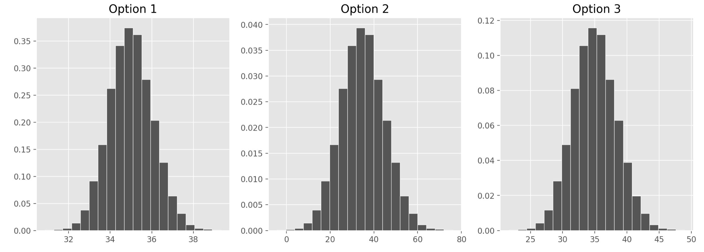
Answer: Option 1
As we found in the previous part, the distribution of the sample mean
should have a standard deviation of 1. We also know it should be
centered at the mean of our sample, at 35, but since all the options are
centered here, that’s not too helpful. Only Option 1, however, has a
standard deviation of 1. Remember, we can approximate the standard
deviation of a normal curve as the distance between the mean and either
of the inflection points. Only Option 1 looks like it has inflection
points at 34 and 36, a distance of 1 from the mean of 35.
If you chose Option 2, you probably confused the standard deviation
of our original sample, 10, with the standard deviation of the
distribution of the sample mean, which comes from dividing that value by
the square root of the sample size.
Difficulty: ⭐️⭐️⭐️
The average score on this problem was 57%.
Problem 24.3
Which of the following statements are guaranteed to be true? Select
all that apply.
We used bootstrapping to compute sample_means.
The ages of credit card applicants are roughly normally
distributed.
A CLT-based 90% confidence interval for the mean age of credit card
applicants, based on the data in hundred apps, would be narrower than
the interval you gave in part (a).
The expression np.percentile(sample_means, 2.5)
evaluates to the left endpoint of the interval you gave in part (a).
If we used the data in hundred_apps to create 1,000
CLT-based 95% confidence intervals for the mean age of applicants in
apps, approximately 950 of them would contain the true mean
age of applicants in apps.
None of the above.
Answer: A CLT-based 90% confidence interval for the
mean age of credit card applicants, based on the data in
hundred_apps, would be narrower than the interval you gave
in part (a).
Let’s analyze each of the options:
Option 1: We are not using bootstrapping to compute sample means
since we are sampling from the apps DataFrame, which is our
population here. If we were bootstrapping, we’d need to sample from our
first sample, which is hundred_apps.
Option 2: We can’t be sure what the distribution of the ages of
credit card applicants are. The Central Limit Theorem says that the
distribution of sample_means is roughly normally
distributed, but we know nothing about the population
distribution.
Option 3: The CLT-based 95% confidence interval that we
calculated in part (a) was computed as follows: \left[\text{sample mean} - 2\cdot
\frac{\text{sample SD}}{\sqrt{\text{sample size}}},
\text{sample mean} + 2\cdot \frac{\text{sample SD}}{\sqrt{\text{sample
size}}}
\right] A CLT-based 90% confidence interval would be computed as
\left[\text{sample mean} - z\cdot
\frac{\text{sample SD}}{\sqrt{\text{sample size}}},
\text{sample mean} + z\cdot \frac{\text{sample SD}}{\sqrt{\text{sample
size}}}
\right] for some value of z less
than 2. We know that 95% of the area of a normal curve is within two
standard deviations of the mean, so to only pick up 90% of the area,
we’d have to go slightly less than 2 standard deviations away. This
means the 90% confidence interval will be narrower than the 95%
confidence interval.
Option 4: The left endpoint of the interval from part (a) was
calculated using the Central Limit Theorem, whereas using
np.percentile(sample_means, 2.5) is calculated empirically,
using the data in sample_means. Empirically calculating a
confidence interval doesn’t necessarily always give the exact same
endpoints as using the Central Limit Theorem, but it should give you
values close to those endpoints. These values are likely very similar
but they are not guaranteed to be the same. One way to see this is that
if we ran the code to generate sample_means again, we’d
probably get a different value for
np.percentile(sample_means, 2.5).
Option 5: The key observation is that if we used the data in
hundred_apps to create 1,000 CLT-based 95% confidence
intervals for the mean age of applicants in apps, all of
these intervals would be exactly the same. Given a sample, there is only
one CLT-based 95% confidence interval associated with it. In our case,
given the sample hundred_apps, the one and only CLT-based
95% confidence interval based on this sample is the one we found in part
(a). Therefore if we generated 1,000 of these intervals, either they
would all contain the parameter or none of them would. In order for a
statement like the one here to be true, we would need to collect 1,000
different samples, and calculate a confidence interval from each
one.
Statistica’s forests are filled with tall creatures called
whingdingdillies. You have a large random sample of 400
whingdingdillies. In this sample, the mean height is 30m and the
standard deviation is 4m. Suppose that whingdingdilly heights are
normally distributed.
Problem 25.1
What are the endpoints of a CLT-based 95% confidence interval for the
mean height of whingdingdillies? Each value should be a single
number.
Answer: left endpoint = 29.6, right endpoint =
30.4
Difficulty: ⭐️⭐️⭐️
The average score on this problem was 50%.
Problem 25.2
Determine the values of the variables v and
w in the code below so that wdd_prop evaluates
to the approximate proportion of whingdingdillies with heights between
30m and 33m. Each value should be a single number.
wdd_prop = stats.norm.cdf(v) - stats.norm.cdf(w)
Answer: v = .75, w = 0
Difficulty: ⭐️⭐️⭐️
The average score on this problem was 52%.
Problem 25.3
Above, we stated an assumption that whingdingdilly heights are
normally distributed. For which part(s) of this question did we
need that assumption?
2.1 only
2.2 only
both 2.1 and 2.2
neither 2.1 nor 2.2
Answer: 2.2 only
Difficulty: ⭐️⭐️⭐️
The average score on this problem was 57%.
Problem 25.4
After a frightening encounter, you discover that whingdingdillies can
run very fast. You collect a sample of 400 whingdingdilly speeds, then
use this sample to generate a bootstrapped distribution of resample mean
speeds. Afterwards, you wonder how your bootstrapped distribution would
have looked if you had instead been able to collect a random sample of
size 900. Which of the following overlaid histograms shows two
bootstrapped distributions of resample mean speeds, based on samples of
size 400 and 900?
From a population with mean 500 and standard deviation 50, you
collect a sample of size 100. The sample has mean 400 and standard
deviation 40. You bootstrap this sample 10,000 times, collecting 10,000
resample means.
Problem 26.1
Which of the following is the most accurate description of the mean
of the distribution of the 10,000 bootstrapped means?
The mean will be exactly equal to 400.
The mean will be exactly equal to 500.
The mean will be approximately equal to 400.
The mean will be approximately equal to 500.
Answer: The mean will be approximately equal to
400.
The distribution of bootstrapped means’ mean will be approximately
400 since that is the mean of the sample and bootstrapping is taking
many samples of the original sample. The mean will not be exactly 400 do
to some randomness though it will be very close.
Difficulty: ⭐️⭐️⭐️
The average score on this problem was 54%.
Problem 26.2
Which of the following is closest to the standard deviation of the
distribution of the 10,000 bootstrapped means?
400
40
4
0.4
Answer: 4
To find the standard deviation of the distribution, we can take the
sample standard deviation S divided by the square root of the sample
size. From plugging in, we get 40 / 10 = 4.
According to Indeed, a popular job website, the hourly pay for data
science interns across the US has a mean of 24 and a standard deviation of 6. You take a random sample of 64 data science interns. In your sample, the
hourly pay has a mean of 25 and a
standard deviation of 4. Suppose you
bootstrap your sample 10,000 times,
calculate the mean hourly pay from each resample, and plot a histogram
of these resampled means. Which of the following best describes this
histogram?
Roughly normal with a mean of 24 and a standard deviation of 6.
Roughly normal with a mean of 24 and a standard deviation of 0.75.
Roughly normal with a mean of 25 and a standard deviation of 4.
Roughly normal with a mean of 25 and a standard deviation of 0.5.
None of the above.
Answer: Option 4
Bootstrapping resamples from your sample, so the histogram of
resampled means centers at the sample mean (25), not the population mean
(24). By the Central Limit Theorem, its spread is the sample standard
deviation divided by √n, which is 4/√64 = 0.5, making Option 4
correct.
The Museum of Natural History has a large collection of dinosaur
bones, and they know the approximate year each bone is from. They want
to use this sample of dinosaur bones to estimate the total
number of years that dinosaurs lived on Earth. We’ll make the
assumption that the sample is a uniform random sample from the
population of all dinosaur bones. Which statistic below will give the
best estimate of the population parameter?
sample sum
sample max - sample min
2 \cdot (sample mean - sample
min)
2 \cdot (sample max - sample
mean)
2 \cdot sample mean
2 \cdot sample median
Answer: sample max - sample min
Our goal is to estimate the total number of years that
dinosaurs lived on Earth. In other words, we want to know the
range of time that dinosaurs lived on Earth, and by definition range =
biggest value - smallest value. By using “sample max - sample min”, we
calculate the difference between the earliest and the latest dinosaur
bones in this uniform random sample, which helps us to estimate the
population range.
Difficulty: ⭐️⭐️⭐️
The average score on this problem was 52%.
Problem 28.2
The curator at the Museum of Natural History, who happens to have
taken a data science course in college, points out that the estimate of
the parameter obtained from this sample could certainly have come out
differently, if the museum had started with a different sample of bones.
The curator suggests trying to understand the distribution of the sample
statistic. Which of the following would be an appropriate way to create
that distribution?
bootstrapping the original sample
using the Central Limit Theorem
both bootstrapping and the Central Limit Theorem
neither bootstrapping nor the Central Limit Theorem
Answer: neither bootstrapping nor the Central Limit
Theorem
Recall, the Central Limit Theorem (CLT) says that the probability
distribution of the sum or average of a large random
sample drawn with replacement will be roughly normal, regardless of the
distribution of the population from which the sample is drawn. Thus, the
theorem only applies when our sample statistics is sum or average, while
in this question, our statistics is range, so CLT does not apply.
Bootstrapping is a valid technique for estimating measures of central
tendency, e.g. the population mean, median, standard deviation, etc. It
doesn’t work well in estimating extreme or sensitive values, like the
population maximum or minimum. Since the statistic we’re trying to
estimate is the difference between the population maximum and population
minimum, bootstrapping is not appropriate.
As in the previous problem, suppose we are told that
sales contains 1000 rows, 500 of which represent cash
transactions and 500 of which represent non-cash transactions.
This time, instead of being given histograms, we are told that the
distribution of "price" for cash transactions is roughly
normal, with a mean of \$14 and a
standard deviation of \$2. We’ll call
this distribution the cash curve.
Additionally, the distribution of "price" for non-cash
transactions is roughly normal, with a mean of \$22 and a standard deviation of \$4. We’ll call this distribution the
non-cash curve.
We want to draw a curve representing the approximate distribution of
"price" for all transactions combined. We’ll call this
distribution the combined curve.
Problem 29.1
What is the approximate proportion of area under the cash
curve between \$10 and \$12? Your answer should be a number between
0 and 1.
Answer: 0.135
We know that for a normal distribution, approximately
68% of the data is found within one standard
deviation of the mean (mean ± 1 SD).
95% of the data falls within two standard
deviations (mean ± 1 SD).
99.7% of the data lies within three standard
deviations (mean ± 1 SD).
For the cash curve, the mean is $14 and the standard deviation is $2,
so using this rule:
The range from $12 to $16 (14 ± 2) covers one standard deviation
from the mean, containing approximately 68% of the data. Since normal
distributions are symmetric, the range from $12 to $14 covers half of
this, or 34% of the total area.
The range from $10 to $18 (14 ± 4) covers two standard deviation
from the mean, containing approximately 95% of the data. By symmetry,
the range from $10 to $14 covers half of this, or 47.5% of the total
area.
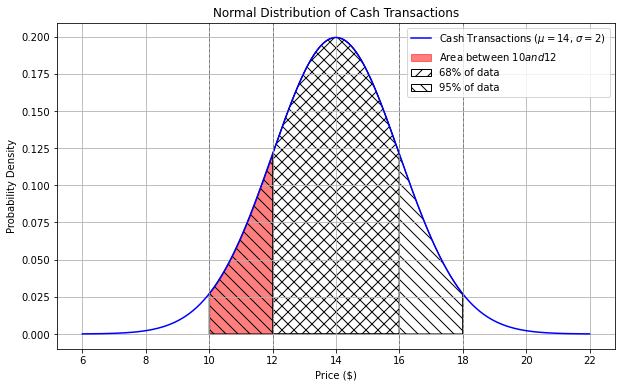
Area from $10 to $12 = Area from $10 to $14 - Area from $12 to $14 =
47.5% - 34% = 13.5% = 0.135
Difficulty: ⭐️⭐️⭐️⭐️
The average score on this problem was 46%.
Problem 29.2
Fill in the blanks in the code below so that the expression evaluates
to the approximate proportion of area under the cash
curve between \$14.50 and
\$17.50. Each answer should be a single
number.
scipy.stats.norm.cdf(a) - scipy.stats.norm.cdf(b)
(a). Answer: 1.75
(b). Answer: 0.25
The expression
scipy.stats.norm.cdf(a) - scipy.stats.norm.cdf(b)
calculates the area under the normal distribution curve between two
points, where a is the right endpoint and b is
the left endpoint. Here, we’ll let a and b
represent the standardized values corresponding to $17.50 and $14.50,
respectively.
We’ll use the formula for standard units:
x_{i \: \text{(su)}} = \frac{x_i -
\text{mean of $x$}}{\text{SD of $x$}}
For the standard units value corresponding to $17.50:
a = \frac{(17.50 - 14)}{2} =
1.75
For the standard units value corresponding to $14.50:
b = \frac{(14.50 - 14)}{2} =
0.25
Difficulty: ⭐️⭐️⭐️
The average score on this problem was 54%.
Problem 29.3
Will the combined curve be roughly normal?
Yes, because of the Central Limit Theorem.
Yes, because combining two normal distributions always produces a
normal distribution.
No, not necessarily.
Answer: No, not necessarily.
Although both distributions are roughly normal, their means are
significantly apart - one centered at 14 (with a standard deviation of
2) and one centered at 22 (with a standard deviation of 4). The
resulting distribution is likely bimodal (having two peaks). The
combined distribution will have peaks near each of the original means,
reflecting the characteristics of the two separate normal
distributions.
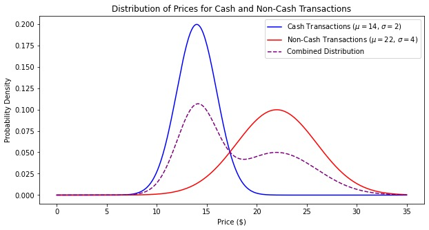
The CLT says that “the distribution of possible sample means is
approximately normal, no matter the distribution of the population,” but
it doesn’t say anything about combining two distributions.
Difficulty: ⭐️⭐️⭐️⭐️
The average score on this problem was 38%.
Problem 29.4
Fill in the blanks in the code below so that the expression evaluates
to the approximate proportion of area under the combined
curve between \$14 and \$22. Each answer should be a single
number.
Since the the combined curve is a combination of two
normal distributions, each representing equal number of transactions
(500 each), we can approximate the total area by averaging the areas
under the individual cash and non-cash curves between \$14 and \$22.
You are given the following information about security deposits for a
sample of 400 apartments in the Mission Hills neighborhood of San
Diego:
Mean deposit: $2,300
Standard Deviation of deposits: $500
Using the fact that scipy.stats.norm.cdf(-0.8) evaluates
to about 0.21, construct a 58% confidence interval for the mean security
deposit of all Mission Hills apartments. Below, give the endpoints of
your confidence interval, both as integers.
Left endpoint: ____(a)____ Right endpoint: ____(b)____
Answer:
(a) 2280
(b) 2320
scipy.stats.norm.cdf(-0.8) tells us that from the bounds
of (-\inf, -0.8], the normal
distribution has an area of 0.21.
Therefore, if we take it to the other side from [0.8, \inf), it also has an area of 0.21 due to the symmetrical property of the
normal distribution. This means that the interval between [-0.8, 0.8] has an area of 1 - 0.21 - 0.21 = 0.58: the confidence
interval we are aiming to find.
In the question, we are given the standard deviation of security
deposits in a sample, meaning we need to find the
standard deviation for the population. To find this, we
use the following formula and compute:
\frac{\text{SD of
sample}}{\sqrt{\text{sample size}}} = \frac{500}{\sqrt{400}} =
\frac{500}{20} = 25.
Now that we have the population standard deviation, we can calculate
the endpoints of the confidence interval.
Left endpoint: 2300 - \frac{4}{5} \cdot 25
= 2280
Right endpoint: 2300 + \frac{4}{5} \cdot
25 = 2320